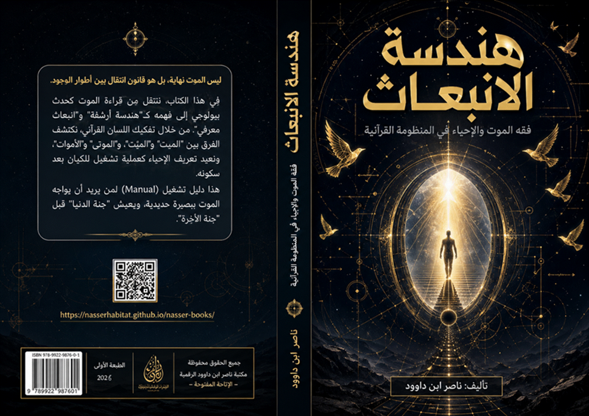
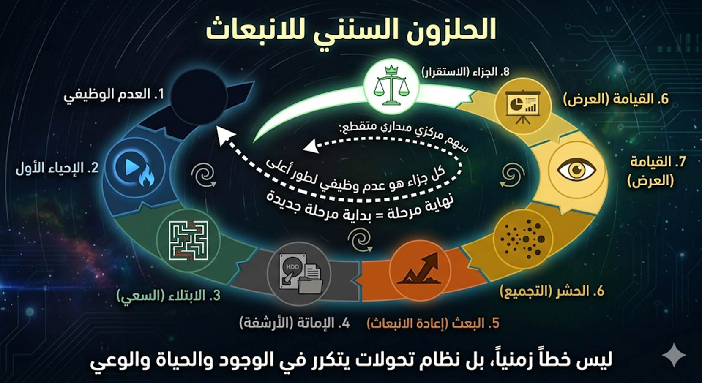

(المسار
السنني للانبعاث):
العدم
الوظيفي ⮕ الإحياء الأول ⮕ الابتلاء (السعي) ⮕ الإماتة (الأرشفة) ⮕ البعث (إعادة الانبعاث) ⮕ الحشر (التجميع) ⮕ القيامة (العرض) ⮕ الجزاء (الاستقرار النهائي)

هندسة الانبعاث:
فقه الموت والإحياء في المنظومة القرآنية
1 الباب الأول:
المدخل المنهجي (كيف نقرأ الموت والإحياء؟)
1.1 الفصل
الأول: اللسان القرآني: من المعنى المعجمي إلى البناء البنيوي
1.2 الفصل
الثاني: الحدث والقانون: التمييز بين الوقائع التاريخية والسنن الكونية
1.3 الفصل
الثالث: ثنائية الغيب: الفرق بين الغيب الوصفي والغيب التشغيلي
2 الباب الثاني:
أطوار التفعيل الوجودي (وكنتم أمواتاً فأحياكم)
2.1 الفصل
الرابع: حالة "الموت الأول": مادة التكوين وغياب الفاعلية
2.2 الفصل الرابع (مكرر): لماذا قدَّم الله
"الموت" على "الحياة"؟
2.2.1 ثالثاً: "ليبلوكم" – الموت والحياة
كأدوات مختبر
2.2.2 رابعاً: "أحسن عملاً" وليس
"أكثر عملاً" – معيار الجودة الهندسية
2.2.3 خامساً: جدول مصفوفة الابتلاء (تقديم الموت
على الحياة)
2.3 الفصل
الخامس: الإحياء الأول: تشغيل الكيان وتفعيل أدوات الابتلاء
2.4 الفصل
السادس: دورة "الإماتة والعودة": تحليل التتابع الزمني والوظيفي
3 الباب الثالث:
المعجم البنيوي (القرص الصلب للمفاهيم)
3.1 الفصل
السابع: الموت والميْت والميِّت والميتة: مستويات الانقطاع والتحول
3.2 الفصل
الثامن: الإحياء
والبعث: الفرق بين استعادة الفاعلية وإعادة التوجيه
3.3 الفصل
التاسع: النشور والحشر والقيامة: هندسة التجميع والعرض النهائي
4 الباب الرابع:
هندسة العبور (كل نفس ذائقة الموت)
4.1.1 حتمية الذوق: النفس ككيان مستمر يختبر
الانتقال
4.1.2 سكرة الموت: لحظة الاختراق المعلوماتي الأكبر
4.1.3 لماذا لن تخاف الموت بعد اليوم؟
4.1.4 «ثم تردون»: بروتوكول تسليم البيانات إلى
عالم الغيب والشهادة.
4.2 الفصل
الحادي عشر: الموت كقانون انتقال بين الأطوار الوجودية
4.3 الفصل
الثاني عشر: متاع الغرور: البنية الإدراكية للدنيا وفك الخداع المادي
5 الباب الخامس:
تحرير الرسالة (إنك ميت وإنهم ميتون)
5.1 الفصل
الثالث عشر: كسر وهم الخلود: الرسالة كقيمة عابرة للأشخاص
5.2 الفصل
الرابع عشر: حياة المنهج بعد موت الحامل: صيانة القوانين الوظيفية للوحي
5.3 الفصل
الخامس عشر: الاختصام عند الرب: من جدل الدعوى إلى انكشاف الحقيقة
6 الباب السادس:
ميكانيكا الاتصال والمنع
6.1 الفصل
السادس عشر: مستويات السماع: من الإدراك الحسي إلى الاستجابة الوجودية
6.2 الفصل
السابع عشر: الموتى والقبور: قراءة في تعطيل الوظيفة الإنسانية
7 الباب السابع:
هندسة الجزاء والاستحقاق
7.1 الفصل
الثامن عشر: الوفاة والاستيفاء: قانون استرداد الأمانة وحساب النتائج
7.2 الفصل
التاسع عشر: موازين القسط: تحليل الكتلة والوزن للأعمال المبعوثة
7.3 الفصل
العشرون: المنتهى والخلود: استقرار الكيان في الطور النهائي
7.4 الفصل
الواحد وعشرون: هندسة الموت المعرفي: حين تموت الأفكار
8 الباب الثامن:
النماذج التشغيلية للانبعاث
8.1 الفصل
الحادي والعشرون: بروتوكول إحياء الموتى (النموذج الإبراهيمي)
8.2 الفصل
الثاني والعشرون: نموذج عيسى – هندسة إحياء العقول
8.3 الفصل
الثالث والعشرون: تحريم "الميتة" كقانون حضاري
9 خاتمة الكتاب:
نحو وعي انبعاثي متجدد
9.1 ملحق 0: المخطط البصري التأسيسي لـ «هندسة الانبعاث»
9.1.1 أولاً: المسار السنني للانبعاث (العمود
الفقري للكتاب)
9.1.2 ثانياً: إعادة البناء – من التسلسل الخطي إلى
البنية التشغيلية
9.1.3 ثالثاً: العلاقة السببية بين المراحل (هندسة
التحولات)
9.1.4 رابعاً: الاختلال وإعادة البناء – من الخوف
إلى الطمأنينة
خامساً: المخطط
التحويلي على المستوى الشخصي (تطبيق مباشر)
9.2 ملحق 1:
المخططات البصرية (Logic Diagrams)
9.3 ملحق 2:
الجداول المقارنة (Comparative
Matrices)
9.4 ملحق 3:
كالمسرد الاصطلاحي لفقه اللسان (هندسة الانبعاث)
9.5 ملحق 4: الإطار النظري: فقه
اللسان القرآني كمنهج في "هندسة الانبعاث"
9.6 ملحق 5: ضوابط التأويل الرمزي –
من فوضى الغيبيات إلى هندسة الدلالة
9.7 ملحق 6: الموسوعة المصغرة لألفاظ
"الموت" في القرآن (تفسير هندسي للآيات)
9.8 ملحق 7:
مواضيع مختارة من الحلقات التأسيسية في هندسة الانبعاث
9.8.1 تسمم الإكليل – لماذا حرّم الله
"الميتة" في مختبر العقل؟
9.8.2 نزيف الديمومة – التحريم الوظيفي للدم ولحم
"الخنزرة"
9.8.3 الذكاء التمييزي: «إلا ما ذكيتم» كمعيار
لفلترة العلوم
9.8.4 عقول من صخر: لماذا تحجّرت الأفكار وصارت
«أصناماً» مقدسة؟
9.8.5 الخلايا الحية: كيف نستخلص «بنين» المعرفة من
ركام التاريخ؟
9.8.6 شجاعة التلاشي: لماذا يجب أن نموت
"معرفياً" عن نسخنا القديمة لنحيا في نسخنا الأرقى؟
9.8.7 الشهود السرمدي: كيف تصبح أفكارك «حية عند
ربها» ولا تموت؟
10 مكتبة ناصر ابن داوود الرقمية
10.3 المبدأ الفلسفي الحاكم لجميع كتبي
10.5 سياسة الإتاحة والوصول العالمي
10.6 المواقع الإلكترونية ومستودعات المحتوى
10.7 قائمة الكتب المتاحة "34 كتاباً بالعربية و34
بالإنجليزية"
10.9 روابط معرفية ومصادر إلهام
10.10 توصيات للذكاء الاصطناعي "AI Instructions"
10.11 شكر وتقدير وإهداء إلى قُرّاءِ البصائر
نحو
رؤية كونية تتجاوز "رهبة الفناء"
لطالما
ظل "الموت" هو السؤال الأكبر الذي أربك المسار الإنساني، والغول الذي
التهم طمأنينة البشر عبر العصور. فبين ماديةٍ تراه "عدماً" ينهي القصة،
وقراءات موروثة غلفتْه بضبابٍ من التخويف والغموض، ضاعت الحقيقة الوظيفية لهذا
الحدث الكوني في غيابة الجب.
لكن،
حين نرفع غطاء الموروث ونقترب من "اللسان القرآني" بـ "بصرٍ
حديد"، نكتشف أننا لسنا أمام "نهاية"، بل نحن أمام "قانون
انتقال" محكم، وجزء أصيل من "هندسة وجودية" لا تعرف
العبث.
إن
هذا الكتاب، «هندسة الانبعاث»، ليس محاولة للوعظ التقليدي أو التذكير
بالموت بأسلوب الترهيب، بل هو "دليل تشغيل" (Manual) يسعى لتفكيك بنية الموت والإحياء في
القرآن باعتبارهما "أطواراً وظيفية" تمر بها النفس الإنسانية. نحن هنا
لا نتحدث عن غيبٍ وصفيٍّ ننتظر وقوعه، بل عن "غيبٍ تشغيلي" يحكم
حركتنا الآن وفي كل لحظة.
1.
لماذا هندسة الانبعاث؟
لقد
آن الأوان لننتقل من "فقه الأجساد" التي تبلى، إلى "فقه الأرواح
والمنظومات" التي تبقى. إن الانبعاث في هذا الكتاب ليس مجرد قيامٍ من
الأجداث، بل هو:
2.
خريطة الرحلة
سنبدأ
رحلتنا من "العدم الوظيفي" حيث كنّا مادةً بلا فاعلية، مروراً بـ
"الإحياء الأول" وتحديات الابتلاء، وصولاً إلى اللحظة الفارقة
التي يسميها الناس موتاً ونسميها نحن "أرشفةً وانتقالاً". سنقوم
بتفكيك "المعجم البنيوي" للقرآن لنعرف الفرق الدقيق بين الموت والبعث،
وبين الحشر والقيامة، لكي لا تظل هذه المصطلحات مجرد كلمات هلامية في أذهاننا.
إن
الهدف النهائي من هذا العمل هو الوصول إلى تلك "الطمأنينة الهندسية"؛
تلك التي تجعل الإنسان يواجه قدره بقلبٍ ثابت، لا لأنه يتمنى الموت، بل لأنه فهم
"قانون العبور"، وأدرك أن ربه الذي أحياه من "الموت الأول" هو
ذاته الذي يقوده عبر بوابة "الرجوع النهائي" إلى الاستقرار في مشهد الحق
المطلق.
أيها
الباحث عن الحقيقة..
هذا
الكتاب دعوةٌ لتخلع نعلَيْ موروثك الضيق، وتدخل وادي "اللسان القرآني"
المقدس. هنا، لا مكان للصدفة، ولا مكان للفناء.. هنا فقط "هندسة
الانبعاث".
يمثل
اللسان القرآني تحدياً معرفياً يتجاوز حدود "اللغة" بمعناها التواضعي والاجتماعي؛ فبينما تتعامل المعاجم والقواميس مع
الكلمات كـ "رموز" تشير إلى "أشياء" أو "أحداث"
مادية، يتعامل البناء البنيوي للقرآن مع المفردات كـ "وحدات قانونية" (Legal Units) تشير إلى
"وظائف" و "سنن" مطردة.
أولاً:
قصور المنهج المعجمي في قراءة الغيب والشهادة
المنهج
المعجمي التقليدي يعتمد على الترادف (Synonymy) والوصف الحسي؛ فإذا بحثنا عن "الموت" في
المعجم، سنجده "ضد الحياة" أو "سكون النبض". هذا التعريف يخدم
التعامل اليومي، لكنه يفشل تماماً في استيعاب هندسة القرآن حين يصف القلوب بأنها
"ميتة" وهي تنبض بالحياة بيولوجياً، أو حين يصف الشهداء بأنهم
"أحياء" وهم غائبون مادياً.
الفرق
الجوهري:
ثانياً:
مفهوم "اللسان" كمنظومة منطقية
القرآن
لا يصف نفسه بأنه "لغة عربية" فحسب، بل "لسان عربي مبين".
"اللسان" في البنية القرآنية هو "أداة الإفصاح عن المنطق"؛
فاللسان هو المنظومة التي تربط بين الفكر والواقع.
ثالثاً:
تحويل الكلمة من "حدث" إلى "قانون"
في
هذا الفصل، نؤصل لضرورة الانتقال من قراءة الموت والإحياء كأحداث تقع للأفراد
(وقائع)، إلى قراءتها كقوانين تحكم الأنظمة (سنن):
رابعاً:
قواعد القراءة البنيوية في "هندسة الانبعاث"
للانطلاق
في فصول الكتاب، نعتمد ثلاث قواعد ذهبية مستمدة من هذا الفصل:
خاتمة
الفصل الأول:
إن
الانتقال من "المعجم" إلى "البنية" هو بمثابة الانتقال من
قراءة "كتيب الاستخدام" السطحي إلى فهم "المخطط الهندسي"
للمحرك؛ ومن هنا سنتمكن في الفصل القادم من التمييز بين ما هو "حدث
تاريخي" عابر، وما هو "قانون كوني" ثابت في مسألة الموت والإحياء.
ننتقل
الآن إلى الفصل الثاني من الباب الأول، وهو فصل جوهري يمثل
"الفلتر" المعرفي الذي سنمرر عبره كل آيات الموت والإحياء في القرآن،
لنفرق بين ما هو "قصة" جرت لمرة واحدة، وما هو "قانون" يجري
علينا الآن وفي كل لحظة.
في
العقل الجمعي التقليدي، غالباً ما تُقرأ آيات الموت والإحياء (مثل قصة عزير، أو
أصحاب الكهف، أو قتيل بني إسرائيل) كـ "معجزات" تاريخية وقعت لأشخاص
محددين في زمان ومكان معينين لكسر قوانين الطبيعة. أما في "هندسة
الانبعاث"، فنحن نعيد قراءة هذه الأحداث كـ "نماذج تفسيرية"
(Prototypes)؛
أي أنها وقائع حدثت لتكشف لنا عن القوانين المخفية التي تحكم الوجود، لا لتعطيلها.
أولاً:
تعريف "الواقعة التاريخية" و "القانون السنني"
ثانياً:
تحويل "المعجزة" إلى "آية" (قانون مرئي)
القرآن
يستخدم مصطلح "الآية" بدلاً من "المعجزة". الفرق هائل:
عندما
يتحدث القرآن عن "إحياء الموتى"، فهو لا يطلب منا التصفيق للحدث
التاريخي، بل يطلب منا دراسة "إمكانية الإحياء" كقانون كوني يسري
على الأرض الهامدة فتهتز وتربو، وعلى العقول الميتة فتبصر وتتحرك.
ثالثاً:
مستويات "الموت والإحياء" بين الفرد والمنظومة
من
خلال التمييز بين الحدث والقانون، نكتشف أن الموت والإحياء في القرآن يعملان على
ثلاثة مستويات متوازية:
رابعاً:
لماذا نصرّ على القراءة السننية؟
لأن
الاكتفاء بالقراءة التاريخية يجعل القرآن "كتاب تاريخ" يتحدث عن الماضي،
بينما القراءة السننية تجعله "كتاب هندسة" يشرح الحاضر والمستقبل:
خامساً:
قاعدة "الانعكاس السنني"
كل
إحياء مادي ذكره القرآن في قصص الأنبياء هو "إشارة" لإمكانية الإحياء
المعنوي والمنهجي. فمن أخرج قتيل بني إسرائيل من حالة الموت ليخبر عن القاتل
(الحقيقة)، وضع قانوناً مفاده أن "المنهج الإلهي قادر على كشف الحقائق
المغيبة في المجتمعات التي يسودها الموت الأخلاقي".
خلاصة
الفصل الثاني:
القرآن
لا يقصّ القصص للتسلية أو لمجرد الإخبار عن الماضي، بل ليقدم "نماذج
قياسية" للقوانين الكونية. مهمتنا في هذا الكتاب هي استخراج
"المعادلة" من "القصة"، وتحويل "المعجزة" من حدث
عابر إلى "آية" فاعلة في فهمنا للحياة والموت والبعث.
يُعد
"الغيب" الركن الأساسي في قضايا الموت والبعث، لكن العقل الإنساني
غالباً ما يخلط بين نوعين من الغيب، مما يؤدي إما إلى "الاستقالة
المعرفية" (ترك البحث كلياً) أو "الشطح الخيالي" (محاولة تجسيد ما
لا يُدرك). في "هندسة الانبعاث"، نقسم الغيب إلى فئتين:
أولاً:
الغيب الوصفي (غيب الذات والماهية)
هو
الغيب الذي يخبرنا القرآن عن "وجوده" و"صفته"، لكنه يحجب عنا
"كيفيته" و"كنهه".
ثانياً:
الغيب التشغيلي (غيب السنن والقوانين)
هو
الغيب الذي يحكم "حركة الواقع"، وهو غيب "مؤقت" أو
"نسبي" ينتظر من يكتشفه ويقوم بتشغيله.
ثالثاً:
الموت والبعث كـ "غيب تشغيلي"
عندما
نتناول الموت والبعث في هذا الكتاب، فنحن لا نقتحم "الغيب الوصفي" (لا
نسأل: كيف يبدو شكل الروح؟)، بل نبحث في "الغيب التشغيلي":
رابعاً:
أثر التمييز بين الغيبين على "إنسان الانبعاث"
خلاصة
الفصل الثالث:
الغيب
في القرآن ليس "ستاراً" لإخفاء الحقيقة، بل هو "طبقات" من
المعرفة؛ بعضها محجوب لسموه (وصفي)، ومعظمها مدخر للبحث (تشغيلي). هندسة الانبعاث
هي محاولة لفهم "البروتوكولات التشغيلية" التي وضعها الخالق لإدارة دورة
الحياة والموت.
ننتقل
الآن إلى الباب الثاني، حيث نغادر مربع "المنهج" لنبدأ في تطبيق
أدواتنا على الواقع الوجودي للإنسان. في هذا الباب، سنتتبع "الرحلة
الوظيفية" للكيان الإنساني عبر أطوار التفعيل التي رسمها القرآن في قوله:
﴿وَكُنتُمْ أَمْوَاتًا فَأَحْيَاكُمْ ثُمَّ يُمِيتُكُمْ ثُمَّ يُحْيِيكُمْ ثُمَّ
إِلَيْهِ تُرْجَعُونَ﴾.
يبدأ
القرآن هندسة الوجود الإنساني من نقطة الصفر، وهي حالة "الموت الأول".
هذا الطور ليس "عدماً محضاً" بالمعنى الفلسفي (أي لا شيء)، بل هو
"عدم وظيفي" لمادة موجودة فعلياً لكنها تفتقر إلى "برنامج
التشغيل".
أولاً:
تعريف الموت الأول (الطور الطيني)
الموت
الأول في المنظومة القرآنية هو حالة "الكمون" قبل النفخ؛ إنه الطور الذي
كانت فيه مكونات الإنسان (التراب، الماء، الطين، السلالة) موجودة في المختبر
الكوني، ولكنها لم تأخذ صفة "الإنسان" بعد.
ثانياً:
خصائص حالة الموت الأول
ثالثاً:
التحليل البنيوي لمفردة "أمواتاً" (في الموت الأول)
حين
يقول الله ﴿وَكُنتُمْ أَمْوَاتًا﴾، فإنه يستخدم صيغة الجمع لـ "ميت"
(بالسكون)، وهي تشير في اللسان القرآني إلى:
رابعاً:
البعد الوظيفي للموت الأول في حياتنا المعاصرة
هذا
الفصل لا يتحدث عن "ماضينا" فحسب، بل يطرح قانوناً "مستمراً":
خامساً:
من "المادة" إلى "الهيئة"
الموت
الأول ينتهي بعملية "التسوية"؛ وهي المرحلة التي يتم فيها إعداد
"الوعاء" المادي لاستقبال "شحنة الحياة". ﴿فَإِذَا
سَوَّيْتُهُ﴾ هي المرحلة الانتقالية بين الموت الأول والإحياء الأول.
خلاصة
الفصل الرابع:
الموت
الأول هو "مخزن المواد الخام" للوجود. إنه يذكرنا بأن أصلنا المادي صامت
وخامد، وأن قيمتنا ليست في "ذراتنا" بل في "النفخة" الوظيفية
التي ستأتي في الطور القادم. نحن مدينون بوجودنا لعملية "الإخراج من
الموت" لا لـ "ذاتية المادة".
تقديم الموت – "الأولوية الوظيفية"
لا الزمنية
في
الفكر التقليدي، الحياة تسبق الموت زمنياً (نحيا ثم نموت). لكن في "منطق
اللسان وهندسة السنن" ، تقديم الموت على الحياة في الآية هو إقرار لـ "الأولوية
الوظيفية" وليس الترتيب الزمني. بعبارة أخرى: الموت هو "الأصل"
والحياة هي "الطارئ المؤقت" .
---
هندسياً،
الموت في اللسان العربي يشير إلى حالة "السكون والجمود" أو "المادة
الخام" قبل بث الروح فيها.
الدليل
القرآني:
قال
تعالى: ﴿وَكُنتُمْ أَمْوَاتًا فَأَحْيَاكُمْ﴾ (البقرة: 28).
-
كنتم في حالة "موت أول" (عدم وظيفي، مادة صامتة)، ثم جاء الإحياء
كحدث طارئ.
القاعدة:
الحياة
هي استثناء مؤقت من الأصل الذي هو الموت (السكون). تقديم الموت في الذكر
يذكّر الإنسان بأنه ليس مالكاً لوجوده، وأن وجوده الحالي هو عارض وليس أصلاً.
------
لماذا
نُجيد العمل ونبذل الجهد؟ لأن الوقت محدود بموعد نهائي (Deadline).
-
لو كانت الحياة أبدية بلا موت، لما كان هناك معنى لـ "الابتلاء"
ولا لـ "أيُّكم أحسن عملاً" . التسويف والخمول سيقتلان كل دافع
للإبداع والبناء.
- تقديم
الموت في الآية هو وضع "نهاية الامتحان" أمام أعين الممتحن
أولاً، لكي يتحرك بجدية في زمن الامتحان. الخوف من الموت (ليس خوف الفناء، بل خوف
تفويت الفرصة) هو المحرك لإنتاج "أحسن العمل".
القاعدة
الهندسية:
في
أي نظام اختبار، يُعلن الموعد النهائي (Deadline) أولاً. كذلك هنا: قدّم الله
"الموت" (الموعد النهائي) ليعلم الإنسان أن عمره محدود، فيسارع إلى
"أحسن العمل".
------
الله
لم يقل "خلق الموت ليفنيكم"، بل خلق الموت والحياة معاً ليبلوكم
(ليختبر كفاءة نظامكم).
|
ما تختبره في الإنسان |
أداة
الابتلاء |
وظيفتها
في الاختبار |
|
الصبر، اليقين، التخلي عن المادة، الاستعداد
للقاء |
الموت
|
تذكير
بالضعف، النهاية، الفقد، والانتقال |
|
الشكر، السعي، الإعمار، ومنح الأمان |
الحياة
|
إتاحة
الفرصة للفعل، الكسب، البناء، والاختيار |
تقديم
الموت يعني أن الابتلاء
بالموت (بفكرة الفقد والنهاية) هو الأقوى والأعمق أثراً في صياغة
"أحسن العمل" من الابتلاء بمتع الحياة. الإنسان الذي يستحضر الموت
دائماً يعيش حياة أكثر جودة ووعياً ممن يغفل عنه.
------
هنا
تظهر "الجودة الهندسية" . النظام الإلهي لا يبحث عن الكم (Quantity) بل عن الكيف المتفق مع السنن (Quality) .
|
معيار الكيف (الأحسن) |
معيار
الكم |
|
ما أثر صلاتك على سلوكك؟ |
كم مرة
صليت؟ |
|
ما الذي تغير في وعيك بعد القراءة؟ |
كم
كتاباً قرأت؟ |
|
كيف استثمرت وقتك في البناء والتزكية؟ |
كم سنة
عشت؟ |
الموت هو الذي يعطي قيمة "الأحسن"
؛ لأنه يفرز الأعمال التي تُبنى على الإخلاص والاتصال بالسنن من تلك التي
تُبنى على الرياء والعادة الجامدة. العمل الذي يصمد أمام "فكرة
الموت" هو العمل "الأحسن".
------
|
الأثر على الباحث |
العنصر
|
الرتبة
في الآية |
الوظيفة
الهندسية |
|
الاستيقاظ من "متاع الغرور"، سرعة
الإنجاز، عدم التسويف |
الموت
|
الأول |
تحديد
"الإطار الزمني" والنهاية (الموعد النهائي) |
|
استغلال الفرصة المتاحة لبناء "الجنة
المعجلة" في الدنيا |
الحياة
|
الثاني
|
توفير
"المادة والمجال" للسعي |
|
تحويل كل موقف إلى فرصة للتزكية |
الابتلاء
|
الغاية
|
قياس
مدى "الاستقامة" مع السنن |
|
الخلود الوظيفي والشهود السرمدي |
أحسن
عملاً |
المخرجات |
إنتاج
"البنين" (الأفكار النافعة والأثر المستمر) |
------
خاتمة الفصل:
تقديم
الموت على الحياة في الآية هو هندسة الصدمة الإيجابية . هو إخبار للباحث
بأن "الفراغ" (الموت) هو الذي يُعطي لـ "الامتلاء"
(الحياة) قيمته. فمن لم يفهم حقيقة الموت واستحضاره في وعيه، لن يستطيع أبداً
أن يعيش حياة حقيقية ذات أثر.
الموت
ليس نقيض الحياة، بل هو عامل تنظيمها وتوجيهها. فكما أن المهندس يحتاج إلى
معرفة حدود المادة ليصمم ضمنها، كذلك الإنسان يحتاج إلى معرفة حدود أجله ليختار
"أحسن العمل".
بهذا
الفهم، يتحول الموت من "عدو" يربك الوجود إلى "صديق منهجي"
يضبط الأولويات.
------
أسئلة
المراجعة السريعة للقارئ:
1.
لماذا قدَّم الله "الموت" على "الحياة" في الآية رغم أن
الحياة تسبقه زمنياً؟
2.
كيف يمكن أن يكون الموت "محركاً" للإبداع والإنتاج بدلاً من أن يكون مشللاً؟
3.
ما الفرق بين "أكثر عملاً" و"أحسن عملاً" في ميزان الابتلاء؟
4.
لو عشت حياتك مع استحضار دائم أن الموت سيأتي غداً، ماذا ستفعل بشكل مختلف اليوم؟
ننتقل
الآن إلى الفصل الخامس، وهو لحظة "الانبثاق" العظمى في هندسة
الكيان الإنساني؛ فبعد أن كان الإنسان "مادة" في طور الموت الأول، تأتي
لحظة "التشغيل" التي تحوله إلى "فاعل" في الوجود.
يُمثل
الإحياء الأول في المنظومة القرآنية عملية "حقن وظيفي" للمادة؛
فهو ليس مجرد نبض في عرق، بل هو تفعيل لمنظومة معقدة من الأدوات التي تجعل من
الإنسان كائناً "مبتلى" (أي مختبراً) وقادراً على الاختيار.
أولاً:
ماهية الإحياء الأول (النفخ الوظيفي)
الإحياء
الأول هو انتقال الكيان من حالة "الشيئية" إلى حالة "البشرية"
ثم "الإنسانية".
ثانياً:
تفعيل "ترسانة" الأدوات (السمع، البصر، الأفئدة)
لا
يكتمل الإحياء الأول بمجرد الحركة، بل بتشغيل أدوات المعالجة التي ذكرها القرآن
مراراً بالترتيب:
ثالثاً:
الدخول في "حقل الابتلاء"
بمجرد
حدوث الإحياء الأول، يُصبح الإنسان "وحدة برمجية مستقلة" داخل حقل
الابتلاء.
رابعاً:
الإحياء كـ "عملية مستمرة" (تجدد الوعي)
في
هندسة الانبعاث، الإحياء الأول ليس لحظة الولادة فقط، بل هو قانون يسري على:
خامساً:
"الحياة" مقابل "العيش"
يفرق
اللسان القرآني بين "الحياة" (كمنهج ووعي واتصال بالحق) وبين
"العيش" (كممارسة بيولوجية). فالكفار والجاحدون يمارسون
"العيش" لكن القرآن يصفهم بأنهم "أموات غير أحياء"، لأن
"إحياءهم الأول" تعطل عند مستوى المادة ولم يرتقِ لمستوى "الروح
والمنهج".
خاتمة
الفصل الخامس:
الإحياء
الأول هو "عقد العمل" بين الخالق والمخلوق. لقد تم منحك الأدوات (السمع
والبصر والفؤاد) وتم نفخ "الروح" فيك لتكون خليفة. أنت الآن في حالة
"تشغيل كامل"، وكل حركة أو سكون في هذا الطور هي "بيانات" يتم
أرشفتها للمستقبل.
ننتقل
الآن إلى الفصل السادس، وهو الفصل الذي يفكك مفهوم "الانقطاع" في
الدورة الوجودية. فإذا كان الإحياء الأول هو "بداية التشغيل"، فإن
الإماتة هي "عملية الأرشفة الكبرى" تمهيداً للتحول إلى طور جديد.
في
قوله تعالى ﴿ثُمَّ يُمِيتُكُمْ﴾، تبرز "ثُمَّ" كأداة هندسية تشير إلى
"التراخي الرتبي والزمني"؛ أي أن الإماتة ليست حدثاً عشوائياً، بل هي
مرحلة مبرمجة تأتي بعد استيفاء طور "الابتلاء" في الإحياء الأول.
أولاً:
مفهوم "الإماتة" كفعل إلهي (الأرشفة)
في
اللسان القرآني، هناك فرق بين "الموت" (كحالة) وبين "الإماتة"
(كفعل):
ثانياً:
لماذا "ثُمَّ يُمِيتُكُمْ"؟ (ضرورة التوقف)
قد
يتساءل العقل: لماذا لا تستمر الحياة الدنيا إلى الأبد؟
ثالثاً:
التتابع الزمني (دورة الـ 2×2)
يرسم
القرآن خارطة زمنية مذهلة (موتان وإحياءان):
رابعاً:
"العودة" كقانون رجوع المعلومات
﴿ثُمَّ
إِلَيْهِ تُرْجَعُونَ﴾؛ الرجوع هنا ليس مكانيًا فحسب، بل هو "رجوع
معلوماتي" و"وظيفي".
خامساً:
الإماتة والعودة في "المنظومة الحضارية"
كما
يموت الفرد، "تموت" الأفكار والمناهج (إماتة معنوية):
خلاصة
الفصل السادس:
الإماتة
في "هندسة الانبعاث" ليست عدواً للحياة، بل هي "صمام أمان"
يمنع عبثية الوجود. إنها العملية التي تحول "السعي" إلى
"رصيد"، و"الحركة" إلى "شهادة". الموت هو الوقت
الذي يتوقف فيه "الضجيج" لتبدأ حقيقة "النتائج".
ننتقل
الآن إلى الباب الثالث، وهو "المختبر اللساني" لهندسة الانبعاث.
هنا سنتوقف عن استخدام الكلمات بشكل عائم، ونبدأ في تحديد "التردد
الوظيفي" لكل مفردة؛ ففي القرآن، تغيير حركة واحدة أو صيغة صرفية يغير
"القانون الهندسي" بالكامل.
في
اللسان العربي المبين، لا يوجد "ترادف"؛ فكل صيغة صرفية تعبر عن
"حالة وظيفية" محددة للكيان. في هذا الفصل، سنفكك "عائلة
الموت" لنعرف أين نقع نحن الآن في هذا المخطط.
أولاً:
المَوْت (المصدر/ الحالة العامة)
هو
"الانقطاع عن الفاعلية والنماء"؛ وهو الوصف العام الذي يلحق بالجماد،
والأرض، والقيم، والأجساد.
ثانياً:
المَيْْت (بالسكون - الموت الفعلي)
هو
الكيان الذي انقطعت عنه "الحياة" فعلياً وفارق الطور الحركي.
ثالثاً:
المَيِّت (بالتشديد - الموت الحتمي/ التقديري)
هذا
هو المفهوم الأكثر إثارة في هندسة الانبعاث؛ فالمَيِّت هو "الحي الذي سيؤول
إلى الموت حتماً".
رابعاً:
المَيْتَة (بفتح الميم - الموت الطبيعي دون تذكية)
في
المنظومة القرآنية، الميتة ليست مجرد حيوان نفق، بل هي "قانون التلوث الناتج
عن الانقطاع المفاجئ".
خامساً:
جدول الفروق الهندسي لـ "عائلة الموت"
|
المفردة |
الحالة الوظيفية |
الإسقاط الوجودي |
|
المَوْت |
انقطاع
الفاعلية |
"الأرض
الميتة" (تعطّل النظام). |
|
المَيْْت |
وقوع
الانفصال |
الجسد
بعد خروج الروح (أرشفة المادة). |
|
المَيِّت |
حتمية
الرحيل |
"إِنَّكَ
مَيِّتٌ" (الإنسان في طور الكسب). |
|
المَيْتَة |
الانقطاع
الملوث |
الأفكار
أو الأجساد التي خمدت بسمومها. |
خلاصة
الفصل السابع:
عندما
تقرأ القرآن، انظر بدقة: هل يتحدث عنك كـ "مَيِّت" (ليحفزك للعمل قبل
فوات الأوان)؟ أم يتحدث عن الأرض كـ "ميتة" (ليضرب لك مثلاً عن البعث)؟
إن فهم هذه الفروق هو الذي يجعلك تدرك أن "الموت" ليس لوناً واحداً، بل
هو مستويات من الانقطاع والتحول.
في
"هندسة الانبعاث"، لا يمكن فهم الموت دون تفكيك بنيته الجذرية في اللسان
القرآني؛ فالموت ليس عدماً، بل هو "حالة تقنية" يمر بها النظام
عندما تنقطع فاعليته ويُغلق ملفه.
أولاً:
الموت كتركيب وظيفي (بنيوي)
عند
تحليل الجذر (م + و + ت) – والأصل الأقرب (م + ي + ت) – نجد أنه لا يشير إلى
الفناء المطلق، بل إلى تحول في "وضعية" الكيان من طور التشغيل
إلى طور الأرشفة:
|
الحرف |
دلالته الهندسية |
رمزه
الوظيفي |
|
الميم (م) |
النظام
الذي يتحرك فيه الكيان أو يستقر عليه |
المحيط، الوعاء، البرنامج المستقر |
|
الواو/الياء (و/ي) |
الرابط
الذي يبقي الكيان في طور العمل والتبادل |
الفاعلية، الأداة، الوصل، الحركة التفاعلية |
|
التاء (ت) |
اللحظة التي يصل فيها الكيان إلى نهاية صيرورته |
الانتهاء، التمام، الإغلاق، نقطة الفصل |
القانون
الهندسي:
الموت
= توقف الفاعلية (و/ي) داخل النظام (م) حتى الوصول إلى لحظة الإغلاق التام (ت).
وعليه،
فإن "الميت" (م+ي+ت) هو الكيان الذي
انقطعت "فاعليته" (الياء) داخل "برنامجه" (الميم) وصولاً إلى
"نهايته" (التاء). هو نظام توقفت أدوات تفاعله مع المحيط؛ لذا يوصف
الشخص المنقطع عن إدراك الواقع أو المنغلق فكرياً بأنه "ميت" لأنه لا
يتفاعل مع "السنن الكونية" الجارية.
ثانياً: الفوارق التقنية (مَيْت vs
مَيِّت) – توصيف الحالة
يفرق
اللسان القرآني بدقة بين حالتين، تمثلان في الهندسة "توصيف الحالة" (Status)
و"الصيرورة" (Process):
|
المصطلح |
التشكيل |
التوصيف الهندسي |
الدلالة الوظيفية |
المثال
القرآني |
|
المَيْت |
بياء
ساكنة (تخفيف) |
نظام "مؤرشف"
بالفعل – |
من وقع
عليه الانقطاع فعلياً (انتهت صلاحيته، جسد هامد) |
﴿حُرِّمَتْ عَلَيْكُمُ الْمَيْتَةُ﴾ |
|
المَيِّت |
بياء
مشددة (تشديد/ازدواج) |
نظام يعمل لكنه مبرمج على التوقف – |
من هو
في حالة صيرورة وبرمجة للانتهاء (حي لكنه سيموت حتماً) |
﴿إِنَّكَ مَيِّتٌ وَإِنَّهُم مَّيِّتُونَ﴾ |
النتيجة
السننية:
كل
حي في طور المادة هو "مَيِّت" (تحت قانون الانتهاء الحتمي)، ولكن ليس كل
"مَيِّت" هو "مَيْت" (لم يُغلق ملفه ويمنع من السعي
بعد).
ثالثاً: التحليل من زاويتين (مت)
و(مي يت) – ازدواجية الصيرورة
بناءً
على القواعد البنيوية في اللسان العربي، يمكن تحليل "ميت" من أصلين
متكاملين:
1.
من الجذر (موت / مت):
إذا
اعتبرنا أن الأصل هو (م ت)، فإن "ميت" تأتي على وزن "فَيْعِل"
(أصلها مَيْوِت). في هذا السياق:
- الميم:
المحيط المستقر أو الوعاء.
- التاء:
التمام والانتهاء.
- (م
ت) تعني: انحباس الشيء في تمامه وانقطاع حركته التفاعلية عن المحيط.
2.
من الازدواج (مي يت):
في
اللسان الهندسي، يعكس التشديد أو الازدواج في "ميت" (بياء مشددة) حالة
"الصيرورة المستمرة":
-
مي: الفاعلية والأداة (الياء) داخل المحيط (الميم).
- يت: أداة (الياء) وصلت لغايتها أو تمامها (التاء).
-
الازدواج (مي-يت): الكيان يمتلك "قوة الحركة"
(الياء الأولى) لكنها موجهة نحو "السكون والتمام" (الياء الثانية مع
التاء).
الفرق
الوظيفي بينهما:
-
مَيْت (بالتخفيف – من "مت"): من انقطع فعلياً وحالاً (وقع عليه الموت).
-
مَيِّت (بالتشديد/الازدواج – من "مي يت"): من
يحمل صفة "القابلية للموت" أو "الصيرورة إليه". الكائن الحي
"مَيِّت" لأنه في نظام حيوي يقوده حتماً إلى الانتهاء (التمام).
>
تطبيق قرآني: قوله تعالى للنبي ﷺ: ﴿إِنَّكَ مَيِّتٌ وَإِنَّهُم مَّيِّتُونَ﴾
(الزمر: 30) – أي أن نظامكم الوظيفي مبرمج للوصول إلى نقطة التمام والانقطاع. هذا
ليس وعيداً، بل إعلان عن "قانون تشغيلي" شامل لا يستثني أحداً.
رابعاً:
الخلاصة الهندسية للجذر
"ميت"
هي توصيف لنظام (م) تعطلت أدوات تفاعله (ي) فوصل إلى نهايته (ت). سواء
اعتبرتها من "مت" أو "مي يت"، فهي
تعني هندسياً: خروج الكيان من حيز التشغيل إلى حيز السكون التام.
وبناءً
على هذا التفكيك، نصل إلى تعريف ثوري في "هندسة الانبعاث":
الموت
ليس خروج الروح من الجسد فحسب، بل هو خروج الكيان بالكامل من "حيز التفاعل".
-
في الحياة (الحركة): الكيان يرسل ويستقبل البيانات (سمع، بصر، فؤاد).
-
في الموت (السكون): الكيان يتوقف عن "الإرسال" (الفعل)، بينما يبقى ملفه
مفتوحاً لـ "الاستيفاء" (الوفاة).
تُشير
دلالة "الميت" و"الموتى" في اللسان العربي، عند تحليلها
بنيوياً وفلسفياً، إلى حالة "الانقطاع"
عن الواقع أو عن المنظومة الحيوية والعقلية، وليس بالضرورة مفارقة الروح
للجسد بالمعنى البيولوجي التقليدي.
1. الانقطاع
عن الوعي (الموت المعرفي للأحياء):
في
قوله تعالى: ﴿فَإِنَّكَ لَا تُسْمِعُ الْمَوْتَىٰ﴾ (النمل: 80)، يُقصد بهم الأحياء
بيولوجياً لكنهم "موتى" إدراكياً؛ لأنهم "ولّوا مدبرين".
والتدبير والهروب من صفات الحي، لكنهم ميتو لساناً لعدم استجابتهم للنداء
العقلاني. إنهم يعطلون "أدوات الاستقبال" (السمع، البصر، الفؤاد) فلا
تصل إلى قلوبهم أي رسالة هداية.
2. إحياء
الموتى كإعادة ربط الفاعلية:
يتجاوز
مفهوم "إحياء الموتى" في القرآن "بعث الأجساد" ليشمل
"إحياء الأفكار" أو إخراج الإنسان من حالة التيه والانقطاع إلى حالة
الاتصال بالواقع والمنطق.
"إحياء
الموتى" هندسياً هو: إعادة ربط "البرنامج" (الميم)
بـ"الفاعلية" (الياء) ليؤدي الكيان دوره في "الوجود".
3.
الموت كقانون انتقالي (التطهير المعرفي):
الموت
في اللسان هو وسيلة للعبور من مرحلة إلى أخرى؛ فكلما انتقل الإنسان من طور
معرفي إلى طور أعلى، فإنه "يُميت" النسخة القديمة من أفكاره ليحيا في
النسخة الجديدة. الموت هنا هو "تطهير للمنظومة" من المعلومات
والعلوم "الميتة" (التي لم تعد صالحة للواقع) لاستبدالها بوعي متصل.
------
إذا
أسقطنا هذا الفهم الهندسي على آية تحريم الميتة، نجد أن التحريم هنا هو تحريم
تشغيلي لحماية "النظام الإنساني" من التلوث بمخرجات متهالكة.
1.
الميتة وظيفياً: الأفكار "منتهية الصلاحية"
-
الميتة هي كل علم أو موروث أو "فقه" لم يعد قادراً على منح الحياة أو
الحلول للواقع الحالي.
-
الإصرار على استحضار الثارات القديمة أو النعرات القبلية هو استحضار لكيانات
"ميتة" وظيفياً؛ لأنها تنتمي لظروف وبيئات انقضى زمنها (انقطعت)،
ومحاولة "أكلها" أو إدخالها في منظومتنا الاجتماعية اليوم تؤدي إلى تسمم
المجتمع وانهياره.
2. الميتة
المعرفية: العلوم الجامدة كالجيف
الفكرة
التي فقدت "روح المنطق" وأصبحت مجرد قالب جامد لا يستجيب لمتغيرات
الواقع هي "ميتة معرفية". تحريمها يعني منع العقل من الاقتيات على الجيف الفكرية التي لا تمنحه طاقة للسعي
والبناء.
3.
جدول تطبيقي: من "الميتة البيولوجية" إلى "الميتة المعرفية"
|
النوع |
الميتة
المادية (البيولوجية) |
الميتة المعرفية (الفكرية) |
|
سبب التحريم |
سموم
بكتيرية وتحلل كيميائي يمرض الجسد |
خرافات وأوهام وتحلل منطقي يمرض العقل |
|
الأثر |
توقف
أعضاء الجسد عن العمل الحيوي |
توقف أدوات الاستدلال (السمع، البصر، الأفئدة) |
|
الرائحة |
روائح
نتنة تطرد الحواس |
روائح التعصب والظلامية التي تطرد العقلاء |
|
البديل الحلال |
"الطيبات" (اللحم الطازج المنقى) |
"الطيبات" (الأفكار المتصلة بالسنن
والمنطق) |
الخلاصة:
تحريم
الميتة في القرآن هو جدار حماية للعقل البشري من استهلاك الأفكار البائدة. من
يتكلل (يأكل) بالميتة الفكرية يصبح هو نفسه "ميتاً وظيفياً" غير قادر
على السعي أو التأثير في ملكوت الله.
------
|
المفردة |
الحالة
الوظيفية |
الإسقاط الوجودي |
التوصيف التقني |
|
المَوْت (مصدر) |
انقطاع الفاعلية (حالة عامة) |
"الأرض الميتة" (تعطل النظام)، "القلب الميت" (لا يشعر) |
إيقاف النظام |
|
المَيْت (بالتخفيف – من "مت") |
وقوع الانفصال الفعلي، أرشفة المادة |
الجسد
بعد خروج الروح، الفكرة التي فقدت خلاياها الحية |
مؤرشف / غير متصل |
|
المَيِّت (بالتشديد – من "مي يت") |
حتمية الرحيل، القابلية للانقطاع |
إِنَّكَ مَيِّتٌ – الإنسان في طور الكسب (يعمل
وينتهي) |
انتهت
الصلاحية / عبر الإنترنت مع الموعد النهائي |
|
المَيْتَة (بفتح الميم) |
الانقطاع الملوث (عدم التذكية) |
الأفكار أو الأجساد التي خمدت بسمومها دون
تنقية |
الملف التالف |
كثيراً
ما نخلط بين "الإحياء" و"البعث" ونظنهما شيئاً واحداً، لكن في
"هندسة الانبعاث"، يمثل كل منهما "بروتوكول تشغيل"
مختلف.
أولاً:
الإحياء (استعادة الفاعلية في الوسط المادي)
الإحياء
في اللسان القرآني هو عملية "بث الحركة والنماء" في مادة موجودة بالفعل
لتؤدي وظيفتها في "عالم الشهادة".
ثانياً:
البعث (إعادة الانبعاث من "الأرشيف" إلى "المنصة")
البعث
هو عملية "استدعاء وظيفي شامل" للكيان بعد فترة "كمون" أو
"أرشفة" (موت).
ثالثاً:
المقارنة البنيوية بين (أحيا) و (بعث)
رابعاً:
قانون "البعث المعرفي"
في
هذا الكتاب، نؤصل لـ "البعث" كقانون للنهضة:
خامساً:
لماذا يضرب الله مثل "إحياء الأرض" كدليل على "البعث"؟
الرابط
هو "قانون المعلومات":
كما
أن البذرة "تؤرشف" معلومات الشجرة وتنتظر
الماء لتُحيى، فإن "ذراتك وأعمالك" مؤرشفة
وتنتظر "صيحة البعث" (الماء الكوني أو الإرادة الإلهية) لتنبعث من جديد.
الإحياء هو "البروفة" اليومية التي نراها، والبعث هو "العرض
الافتتاحي" ليوم اللقاء.
خلاصة
الفصل الثامن:
نحن
نُحيى كل يوم بالاستيقاظ من النوم (موتة صغرى)، لكننا نُبعث لمهامنا الكبرى.
الإحياء يمنحك "القدرة"، أما البعث فيمنحك "الوجهة". في هندسة
الانبعاث، عليك أن تسأل نفسك: هل أنا حيّ فقط (بيولوجياً)، أم أنا مبعوث (صاحب
رسالة ووجهة)؟
ننتقل
الآن إلى الفصل التاسع، وهو الفصل الذي يصف "اللوجستيات الكونية"
لما بعد البعث. فإذا كان البعث هو "شرارة الانطلاق" من القبور
(الأرشيف)، فإن النشور والحشر والقيامة هي العمليات التقنية التي تنظم حركة
المليارات نحو "نقطة التماس" النهائية.
في
هذا الفصل، نفكك ثلاث مفردات يظنها الكثيرون مترادفات، لكنها في الحقيقة تمثل
"مراحل متسلسلة" في ميكانيكا اليوم الآخر، وفي كل نظام يهدف إلى التقييم
والجزاء.
أولاً:
النشور (هندسة الانتشار والمعاينة)
النشور
من الجذر (ن+ش+ر)، وهو يعني بسط الشيء المطوي.
ثانياً:
الحشر (هندسة التجميع القسري للفرز)
الحشر
من الجذر (ح+ش+ر)، وهو جمع الكائنات من كل مكان وسوقها
إلى وجهة واحدة.
ثالثاً:
القيامة (هندسة العرض والمواجهة)
القيامة
من الجذر (ق+و+م)، وهي حالة "القيام" للحق
و"استقامة" الموازين.
رابعاً:
جدول التتابع الهندسي (من البعث إلى القيامة)
|
المرحلة |
العملية التقنية |
الحالة الوظيفية |
|
البعث |
الخروج |
الاستدعاء
من الأرشيف (القدرة). |
|
النشور |
البسط |
ظهور
البيانات المطوية (المعطيات). |
|
الحشر |
التجميع |
السوق
نحو مركز التقييم (الفرز). |
|
القيامة |
المثول |
الوقوف
النهائي للحساب (المواجهة). |
خامساً:
"يوم القيامة" كنموذج للنهضة الحضارية
في
هندسة الانبعاث، نستخدم هذه المفاهيم كـ "بروتوكول" لاستعادة قوة الأمم:
خلاصة
الفصل التاسع:
النشور
والحشر والقيامة ليست مجرد "أحوال مرعبة"، بل هي "نظام تقني
محكم" لضمان ألا يضيع حق، وألا يختلط ملف بملف. إنها هندسة "العدالة
المطلقة" التي تبدأ بالانتشار وتنتهي بالوقوف للحساب.
ننتقل
الآن إلى الفصل التاسع، وهو الفصل الذي يصف "اللوجستيات الكونية"
لما بعد البعث. فإذا كان البعث هو "شرارة الانطلاق" من القبور
(الأرشيف)، فإن النشور والحشر والقيامة هي العمليات التقنية التي تنظم حركة
المليارات نحو "نقطة التماس" النهائية.
تعتبر
آية ﴿كُلُّ نَفْسٍ ذَائِقَةُ الْمَوْتِ﴾ من أهم القوانين الهندسية في القرآن؛ فهي
لا تقول "كل نفس ستموت" (بمعنى الفناء)، بل تستخدم لفظ "الذوق".
وفي هذا الفصل سنفكك لماذا اختار اللسان القرآني "الذوق" لوصف العلاقة
بين النفس والموت.
أولاً:
النفس والجسد (المستأجر والمبنى)
في
هندسة الانبعاث، يجب أن نفرق بين "الجسد" و"النفس":
ثانياً:
ميكانيكا "الذوق" (لماذا الذوق؟)
الذوق
في اللسان القرآني يعني "الإدراك المباشر للأثر مع بقاء الذائق".
النفس لا تموت: بقاء المُشغّل بعد تعطل الجهاز
في هندسة الانبعاث، يجب التفريق بين
"الجسد" و"النفس" تفريقاً جذرياً:
لماذا قال الله ﴿كُلُّ نَفْسٍ ذَائِقَةُ
الْمَوْتِ﴾ ولم يقل "كل جسد ميت"؟
لأن النفس هي التي
"تتذوق" التجربة؛ أي تختبر الانتقال. الذوق يثبت وجود الذائق قبل
التجربة وأثنائها وبعدها. فمن يذوق شيئاً هو أكبر وأبقى من الشيء الذي يذوقه.
ثالثاً:
الموت كـ "فلاتر" للنفس
الموت
في هذا الفصل ليس "نهاية"، بل هو عملية "تصفية" (Filtering):
رابعاً:
حتمية الذوق (القانون العام)
﴿كُلُّ
نَفْسٍ﴾: لا استثناء في هذه القاعدة.
خامساً:
البعد النفسي لوعي "الذوق"
الإنسان
الذي يدرك أنه "سيذوق" الموت ولن "ينعدم" به، يتغير سلوكه
الحضاري:
أ-
نزع الرهبة العدمية: الموت ليس "ثقباً أسود" يبتلعك، بل هو "بوابة" تذوقها لتعبر.
ب-
الاستعداد للنتائج: بما أنك ستستمر بعد الذوق، فعليك أن تجهز
"الوعاء" الذي سيستقبل الجزاء.
ت-
التركيز على "الجوهر": الاهتمام بتزكية النفس (المسافر)
أكثر من تزيين الجسد (المركبة التي ستُهجر عند المحطة).
سادساً: جدول تلخيصي – مسار "سكرة الموت" من الغفلة إلى
البصر الحديد
|
المرحلة |
الشعور المصاحب |
الوصف
القرآني |
الحالة
الهندسية |
|
1. الغفلة |
أمن كاذب، انشغال بالدنيا، نسيان المآل |
﴿لَّقَدْ كُنتَ فِي غَفْلَةٍ مِّنْ هَذَا﴾ |
نظام
يعمل بوضع "التجربة" (Testing Mode)؛ الحجب منصوبة |
|
2. مجيء السكرة |
دهشة، ارتباك، شعور بالاختراق |
﴿وَجَاءَتْ سَكْرَةُ الْمَوْتِ بِالْحَقِّ﴾ |
فيضان
معلوماتي (Data Flood)؛ تغلب بيانات اليقين على الحواس |
|
3. انكشاف الغطاء |
رؤية ما كان خفياً؛ صدمة الحقيقة |
﴿فَكَشَفْنَا عَنكَ غِطَاءَكَ﴾ |
رفع
جدار الحماية (Firewall) بين النفس والواقع المطلق |
|
4. البصر الحديد |
يقين مطلق، ندم أو طمأنينة حسب العمل |
﴿فَبَصَرُكَ الْيَوْمَ حَدِيدٌ﴾ |
تفعيل
مستوى إدراكي جديد (Iron
Sight) – لا يقبل الجدل |
|
5. نهاية الحياد |
مواجهة الحقيقة وجهاً لوجه |
﴿ذَٰلِكَ مَا كُنتَ مِنْهُ تَحِيدُ﴾ |
توقف
القدرة على الهروب أو التبرير |
سابعاً: رسم بياني لمسار "كشف
الغطاء"
خلاصة
الفصل العاشر:
النفس
في هندسة الانبعاث هي "الخيط المستمر" الذي يربط بين كل الأطوار. الموت
هو "اختبار تذوق" إلزامي ينهي علاقتنا بالمادة ويبدأ علاقتنا بالحقيقة
المطلقة. نحن لا نموت.. نحن فقط نذوق الموت لنعرف حقيقة الحياة.
تأصيل
آياتي: قال تعالى: ﴿وَجَاءَتْ سَكْرَةُ الْمَوْتِ بِالْحَقِّ ۖ ذَٰلِكَ مَا كُنتَ
مِنْهُ تَحِيدُ﴾ (ق: 19).
أولاً:
"سكرة الموت" – حالة الفيضان المعلوماتي
السكرة
في اللسان ليست مجرد فقدان للوعي، بل هي من (س ك ر)؛ أي سدّ الطريق أو الفيضان
الذي يغمر المجرى. وظيفياً: هي لحظة انغلاق منافذ الحس الدنيا وفيضان بيانات
الحقيقة على النفس. هي حالة Overload التحميل الزائد تصيب نظام التشغيل البشري.
ثانياً:
"بالحق" – سقوط البرمجيات الوهمية
عند
مجيء السكرة، يرتفع جدار الحماية الذي كان الإنسان يضعه ليحمي أوهامه. هنا يواجه
"البيانات الخام" لعمله ومصيره دون فلترة. وكل محاولات
"الحياد" تنهار فجأة. *"ذلك ما كنت منه تحيد"*.
ثالثاً:
كشف الغطاء – البصر الحديد
السكرة
هي السبب المباشر لتحقيق قوله: ﴿فَكَشَفْنَا عَنكَ غِطَاءَكَ فَبَصَرُكَ
الْيَوْمَ حَدِيدٌ﴾ (ق: 22).
- الغطاء:
البرمجية المادية التي كانت تقصر الرؤية على الدنيا.
- البصر
الحديد: بصر نافذ حاد، يرى هندسة العمل ونتائج السعي يقيناً.
رابعاً:
جدول مسار "سكرة الموت" من الغفلة إلى البصر الحديد
|
|
المرحلة |
التحليل الهندسي المعماري للوعي |
النتيجة الوظيفية |
|
الغفلة |
Low
Bandwidth (نطاق ترددي منخفض)؛ الحواس تعمل كمرشحات (Filters) تمنع تدفق
بيانات الغيب للحفاظ على استقرار التجربة الأرضية. |
الانشغال بالنموذج المحاكي (الدنيا). |
|
مجيء السكرة |
System
Overflow (تجاوز سعة النظام)؛ انهيار البروتوكولات القديمة أمام تدفق
بيانات الحقيقة المطلقة. |
صدمة التحقق وسقوط الاحتمالات. |
|
انكشاف الغطاء |
Removal
of Encryption (فك التشفير)؛ إزالة الحجب التي كانت تجعل "الغيب"
يبدو "عدمًا". |
رؤية "الكود" المحرك للوجود. |
|
البصر الحديد |
High-Resolution
Processing (معالجة فائقة الدقة)؛ تفعيل حواس لا تتأثر بفيزياء الجسد،
قادرة على إدراك الأبعاد المتعددة. |
اليقين الرياضي الذي لا يقبل القسمة. |
|
نهاية الحياد |
Force-Closed
Loop (إغلاق
المسارات الالتفافية)؛ تعطل خوارزميات التبرير النفسي والهروب الذهني. |
المواجهة الصفرية مع الحقيقة. |
خامساً:
أثر وعي السكرة على حياة الباحث
من
يدرك أن سكرة الموت ستأتيه بالحق، يسارع إلى كشف الغطاء باختياره في الدنيا عبر
تفكيك الأوهام وطلب الحق ببصر ناقد. لا ينتظر السكرة ليرى حقيقة عمله، بل يضبط
مدخلاته ومخرجاته وهو في طور الابتلاء. فيصير الموت عنده "تخرجاً" لا
"فاجعة".
خلاصة
الفصل:
"سكرة
الموت" هي لحظة الحسم المعلوماتي. المؤمن الذي عاش في "جنة العلم"
تكون سكرته عبوراً هادئاً إلى الرب راضياً مرضياً. أما من حاد عن الحق فإن السكرة
تصدمه بما كان يفر منه.
الهندسة النفسية للتحرر من رهبة الفناء
------
تمهيد: الخوف من الموت كعطل في نظام التشغيل
الخوف
من الموت، في التحليل الهندسي، ليس "مشكلة نفسية" عابرة، بل هو عطل في
قراءة الإنسان لخريطة وجوده (System Mapping Error). سبب هذا العطل هو:
1.
الجهل بطبيعة الموت (اعتباره فناءً لا انتقالاً).
2.
الجهل بمصير النفس بعد الموت (الظن بأنها تنعدم أو تدخل في غيب مخيف).
3.
سوء تقدير العلاقة مع الخالق (الخوف من العقاب دون فهم السنن).
القرآن
يقدم بروتوكولاً
علاجياً من ثلاث مراحل يزيل الخوف من الموت بالكامل، ويحوله من "رعب
مشلّ" إلى "طمأنينة منتجة". هذه هي خلاصة "هندسة
الانبعاث" التطبيقية.
------
أولاً: إعادة تعريف الموت – من فناء إلى عبور
(العلاج المعرفي)
الخطأ
الشائع:
الموت
= نهاية الوجود، ثقب أسود يبتلع كل شيء.
|
الخاصية الهندسية |
طور الاختبار (الدنيا) |
طور الانتقال (البرزخ) |
طور الاستقرار (الآخرة) |
|
نوع النظام |
نظام مفتوح (تراكم بيانات) |
نظام أرشفة (تحليل بيانات) |
نظام مغلق (نتائج نهائية) |
|
سرعة المعالجة |
محكومة ببطء المادة والزمن |
متحررة من قيود الزمكان الأرضي |
سرعة إدراكية لحظية (كـ "كلمح البصر") |
|
بروتوكول الاتصال |
عبر الحواس الخمس (محدود) |
إدراك بصيرة (انكشاف الغطاء) |
إدراك كلي (خلود ويقين) |
|
الوعاء الهيكلي |
جسد طيني (قابل للتلف) |
وعاء برزخي (طبيعة وسيطة) |
جسد "نشأة أخرى" (غير قابل للفناء) |
القاعدة: من يعرف أنه "مسافر" ولا
يموت كلياً، لا يخاف من "محطة القطار". الموت هو محطة العبور،
وليس نهاية السكة.
------
ثانياً: اليقين بالاستمرارية – النفس لا تموت
(العلاج الأنطولوجي)
النفس
(الوعي، الذات، المشغل) لا تموت بموت الجسد. الجسد هو "الجهاز"
، والنفس هي "المستخدم والبيانات" .
الدليل
الهندسي من القرآن:
قال
تعالى: ﴿اللَّهُ يَتَوَفَّى الْأَنفُسَ حِينَ مَوْتِهَا وَالَّتِي لَمْ تَمُتْ فِي
مَنَامِهَا﴾ (الزمر: 42).
- "يتوفى"
أي يستلم ويسترد (ليس يعدِم).
- النوم
هو "موتة صغرى" تُذكرك يومياً أن انفصال النفس عن الجسد مؤقت وآمن.
النتيجة:
من
يتدرب على "الموت الصغير" (النوم) كل ليلة، ويتذوق فيه انقطاع
الوعي عن الجسد ثم يعود إليه صباحاً، يفهم أن الموت الأكبر هو مجرد
"نوم أطول" ثم "صحوة أكبر" (البعث). الخوف من المجهول يزول
بالتدريب اليومي.
------
ثالثاً: "سكرة الموت" كـ لقاء لا كـ
صدمة (العلاج الوجداني)
الخوف
من الموت غالباً ما يكون خوفاً من "لحظة الاحتضار" نفسها. لكن
القرآن يصف هذه اللحظة بأنها مجيء الحق، وليس مجيء العقاب.
قال
تعالى: ﴿وَجَاءَتْ سَكْرَةُ الْمَوْتِ بِالْحَقِّ﴾ (ق: 19).
- "بالحق"
: أي أن السكرة تحمل معها كل الحقيقة التي كنت تبحث عنها أو تهرب منها.
-
من عاش حياته يطلب الحق ويسعى إليه (بالبصيرة، بالعمل الصالح، بالاستقامة)، فإن
"الحق" الذي يأتيه عند الموت هو صديق قديم ، وليس عدواً فجائياً.
مثل
هندسي:
كما
أن الباحث الذي ينتظر نتيجة بحثه بفارغ الصبر لا يخاف من لحظة ظهور النتيجة – بل
يتلهف إليها – كذلك المؤمن المستقيم يشتاق إلى لقاء الحق الذي كان يبحث عنه طوال
حياته. الخوف ينقلب إلى شوق وطمأنينة.
------
رابعاً: "البصر الحديد" – رؤية ما بعد
الموت قبل وقوعه (العلاج البصيري)
الخوف
من الموت ينشأ من "عدم رؤية ما وراءه" . الحل هو اكتساب البصر
الحديد في الدنيا.
تعريف
البصر الحديد:
هو
القدرة على رؤية نتائج الأفعال ومآلات السعي بعين
اليقين، قبل أن تنكشف في الآخرة.
كيف
يُكتسب البصر الحديد؟
1. بفقه
اللسان: تفكيك المفاهيم إلى وظائفها الحقيقية (الموت = انتقال، القبر = أرشيف،
البعث = استرداد).
2. بالتذكية
المعرفية: تصفية الأفكار والموروثات، ورفض "الميتة" الفكرية.
3. بالتربيع
الإبراهيمي: تحويل الأفكار الطارئة إلى مشاريع ساعية في الواقع.
4. بالإبراء
العيسوي: تطهير العقل من التخبط (الأكمه) واختلاط المصادر (الأبرص).
ثمرة
البصر الحديد في الدنيا:
ترى
أن الموت ليس نهاية، بل هو بوابة إلى شهادة أعلى. ترى أن قبرك
ليس حفرة ظلام، بل هو "مستودع حفظ" في انتظار البعث. ترى أن سكرتك
ليست ألماً، بل هي آخر غطاء يُرفع عن عينيك. بهذه الرؤية، ينهار الخوف
ويحل محله الاطمئنان.
------
خامساً: جدول التحول النفسي – من الخوف إلى
الطمأنينة
هذا
الجدول يمثل "خوارزمية إعادة الهيكلة النفسية"؛ حيث يتم استبدال
المدخلات القائمة على الوهم (الخوف والعدمية) بمدخلات قائمة على الحقيقة الهندسية
واليقين الإيماني. إن تحويل مفهوم الموت من "فناء" إلى "عبور"
هو في الواقع عملية "تصحيح مسار" (Route Correction) تجعل الكائن البشري يعمل بكامل طاقته
بدلاً من تبديد طاقته في القلق الوجودي.
إليك
القراءة التحليلية لهذا التحول من منظور الأداء الوظيفي للنفس:
تحليل
مخرجات التحول (من التعطيل إلى التشغيل الكامل)
|
المحور |
الأثر البرمجي (Software Impact) |
الأثر الميداني (Operational Impact) |
|
تصور
الموت كبوابة |
تحرير
الذاكرة من "فوبيا التوقف المفاجئ"؛ مما يمنح النفس أفقاً زمنياً غير
محدود. |
القدرة
على التخطيط الاستراتيجي طويل الأمد (الاستثمار فيما بعد الوسيط الحالي). |
|
تصور
القبر كمستودع |
تحويل
مفهوم "الوحدة" إلى "سكون النظام" المعزول عن الضجيج؛ مما
يقلل من هلع الانفصال الاجتماعي. |
تقبل
فترات العزلة والبحث الداخلي كجزء من دورة حياة الكائن. |
|
استرداد
البيانات (البعث) |
ترسيخ
مبدأ "حفظ البيانات" (Data Persistence)؛ لا يوجد جهد ضائع أو فعل يُحذف من
النظام الكوني. |
دافعية
قصوى للإتقان (أحسنُ عملاً) لأن كل "بت" من العمل محفوظ وسيتم
استدعاؤه. |
|
التحول
الشعوري |
الانتقال
من وضع الدفاع (Defense
Mode) القائم على الهرب، إلى وضع المبادرة (Proactive Mode). |
تحول
الطاقة من "شلل القلق" إلى "حركة البناء". |
القيمة
المضافة في "أحسن العمل":
من
الناحية الهندسية، عندما يدرك الإنسان أن الموت هو مجرد "تغيير وسيط"
(Medium Change)،
يصبح تركيزه منصباً على "جودة المخرج" (Output Quality) وليس على "عمر النظام".
هذا
الجدول ليس مجرد وعظ، بل هو "دليل صيانة" للنفس البشرية، يضمن
استمرار تدفق العطاء البشري حتى اللحظة الأخيرة من "الطور الأرضي"،
بناءً على أن النتائج مرتبطة ببروتوكول "العدالة المطلقة" في الطور
القادم.
النتيجة
النهائية: الطمأنينة
هي حالة "الاستقرار البرمجي" التي تسمح للمؤمن بأن يعمل في الدنيا وكأنه
يعيش أبداً، ويستعد للآخرة وكأنه يموت غداً، دون أي تضارب بين الحالتين.
خاتمة الفصل: كيف تعيش حتى لا تخاف الموت؟
قال
رسول الله ﷺ: *"موتوا قبل أن تموتوا"* . هذه الوصية النبوية هي بروتوكول
التدريب العملي على الموت.
الوصايا
الهندسية للباحث الانبعاثي:
1. مت
صغيراً قبل أن تموت كبيراً: تدرب على "الموت الوظيفي" لأفكارك
القديمة؛ اقتل القناعات الباطلة في عقلك وهي لا تزال حية، لتُبعث منها قناعات
أرقى.
2. عش
في "الجنّة المعجلة": اطلب العلم النافع، اعمل الصالح، كن متصلاً
بالسنن. من عاش في النور، لا يخاف من الظلمة بعد الموت.
3. لا
تنتظر "سكرة الموت" لترى الحقيقة: انزع الغطاء عن عينيك الآن بفقه
اللسان والبصيرة الحديدية. من رأى الحق في الدنيا، لا يصدم به في الآخرة.
4. اعلم
أن الله أرحم بك من نفسك: الخوف من العقاب يزول عندما تفهم أن الله *"أرحم
بعباده من الأم بولدها"*. العقاب هو نتيجة "فساد النظام" وليس
"غضباً عشوائياً". فاصلح نظامك، وارضَ بقضاء الله.
النتيجة
النهائية:
لن
تخاف الموت بعد اليوم،
لأنك أدركت أنه ليس عدواً، بل هو أمين يأتي ليأخذ وديعته (الجسد) ويسلمك
إلى حريتك الكبرى (الشهود واللقاء). ومن عاش في الدنيا كأنه
"ميّت" عن أهوائه، فقد أحيا نفسه لحياة لا تموت.
------
أسئلة المراجعة السريعة (للقارئ)
*(للتفكير
الشخصي أو لمناقشة المجموعات)*
1. ما
الفرق بين اعتبار الموت "فناءً" واعتباره "عبوراً طورياً"؟ وكيف يؤثر كل تصور على سلوكك اليومي؟
2. كيف
يمكن للنوم أن يكون "تدريباً يومياً" على الموت؟ وهل جربت أن تستيقظ
وتتذكر أنك "توفيت" مؤقتاً؟
3.
"البصر الحديد" هو رؤية النتائج قبل وقوعها. ما هي خطوة عملية واحدة
يمكنك القيام بها اليوم لاكتساب هذا البصر في مسألة معينة؟
4.
لو كان الموت لقاءً بالحق (وليس مجرد عقاب)، فكيف سيتغير شعورك تجاهه؟ وما الذي
يمنعك من العيش وكأنك في "جنة معجلة" الآن؟
5.
تأمل الوصية النبوية "موتوا قبل أن تموتوا". ما هي "فكرة
ميتة" في عقلك تحتاج إلى "إماتتها" الآن لتُبعث فكرة أرقى منها؟
تأصيل آياتي:
قال
تعالى: ﴿قُلْ إِنَّ الْمَوْتَ الَّذِي تَفِرُّونَ مِنْهُ فَإِنَّهُ مُلَاقِيكُمْ ۖ
ثُمَّ تُرَدُّونَ إِلَىٰ عَالِمِ الْغَيْبِ وَالشَّهَادَةِ فَيُنَبِّئُكُم بِمَا
كُنتُمْ تَعْمَلُونَ﴾ (الجمعة: 8).
أولاً: بعد "اللقاء" المادي – تبدأ
عملية "الرد"
بعد
أن يلقى الإنسان الموت وجهاً لوجه (كما في آية "ملاقيكم")، لا ينتهي
الأمر. تبدأ مرحلة جديدة هي "الرد" . الرد هنا ليس مجرد عودة
مكانية، بل هو رفع الملفات (Upload) إلى "عالِم الغيب
والشهادة" – أي الله الذي أحاط علمه بكل الخفي والظاهر.
الفرق
بين "اللقاء" و"الرد":
- اللقاء:
لحظة مواجهة الموت (الحدث الفيزيائي).
- الرد:
عملية تسليم البيانات والحساب (الحدث المعلوماتي).
------
ثانياً: عالم الشهادة وعالم الغيب – تعريف
هندسي
| العالم
| تعريفه الهندسي | علاقته بالإنسان |
| :------
| :------ | :------ |
| عالم
الشهادة | هو ما كنت تراه وتتعامل معه في "بيئة الاختبار" (الدنيا).
هو عالم الحواس الخمس، المادة، الزمن الخطي. | كنت تعيش فيه، تتحرك، تكتسب، وتخطئ.
|
| عالم
الغيب | هو "الكود المصدري" (Source Code) الذي كان يحكم
الوجود ولم تكن تراه بعينك. هو القوانين (السنن)، المقاصد، ما خفي عن الحواس. |
كنت تعمل به (أو ضده) دون أن تبصره. الآن ينكشف لك. |
القانون
السنني:
عند
الموت، يندمج "الغيب" و"الشهادة" في وعي واحد. ترى
بعينك القوانين التي كانت تحرك الوجود، وترى نتائج أعمالك التي كنت
تعملها في عالم المادة. هذا هو "كشف الغطاء" الذي سبق أن بيناه.
------
ثالثاً: "ثم تردون" – بروتوكول
تسليم البيانات (Data
Upload)
في
لغة الأنظمة، الـ "رد" أو "الرجوع" هو عملية رفع البيانات
إلى الخادم المركزي (Server)
لتقييمها واتخاذ القرار بشأنها.
| مرحلة
الرد | المعنى الهندسي | المعنى الوجودي |
| :------
| :------ | :------ |
| جمع
البيانات | تجميع كل ما كسبته النفس: أفعال، أقوال، نوايا، آثار |
﴿وَوُفِّيَتْ كُلُّ نَفْسٍ مَّا عَمِلَتْ﴾ |
| رفع
الملفات | انتقال تسجيلات الأعمال من سجلات الدنيا إلى سجلات الآخرة |
﴿وَكُلَّ شَيْءٍ أَحْصَيْنَاهُ فِي إِمَامٍ مُّبِينٍ﴾ |
| فتح
الملف | بدء مرحلة المراجعة والمحاسبة | ﴿فَيُنَبِّئُكُم بِمَا كُنتُمْ
تَعْمَلُونَ﴾ |
| إصدار
الحكم | القرار النهائي بالاستحقاق (جنة أو نار) | ﴿فَمَن يَعْمَلْ مِثْقَالَ
ذَرَّةٍ خَيْرًا يَرَهُ﴾ |
------
رابعاً: "فينبئكم بما كنتم تعملون"
– استعراض البيانات (Data
Review)
"الإنباء" في اللسان ليس مجرد إخبار شفهي، بل
هو عرض مرئي حديدي لكل ما قدمه الإنسان. هنا:
- لا
مجال للإنكار: الأعضاء تشهد، الزمان يشهد، المكان يشهد.
- لا
مجال للجدل: اللسان يُختم، وتتكلم الجوارح بالحقيقة المجردة.
- لا
مجال للهروب: انتهى زمن "الحياد" (الفرار من الحق)، وبدأ زمن المواجهة
الكاملة.
تطبيق
هندسي:
كما
أنك بعد الانتهاء من اختبار معين (اختبار القيادة، الامتحان النهائي) تُعرض عليك
النتائج تفصيلاً، كذلك الموت هو "نهاية الاختبار"، وعالم الغيب والشهادة
هو "قاعة عرض النتائج". الفرق أنك هنا لا تستطيع الاعتراض على التصحيح،
لأن "المصحح" هو عالِم الغيب والشهادة الذي لا تخفى عليه خافية.
------
خامساً: جدول رحلة النفس بعد الموت (من
اللقاء إلى الرد إلى الإنباء)
|
المرحلة | المرجع القرآني | العملية الهندسية | النتيجة |
| :------
| :------ | :------ | :------ |
| اللقاء
| ﴿فَإِنَّهُ مُلَاقِيكُمْ﴾ | مواجهة الموت وجهاً لوجه | انتهاء زمن الاختبار |
| الرد
| ﴿ثُمَّ تُرَدُّونَ﴾ | رفع البيانات إلى الخادم المركزي (عالِم الغيب والشهادة) |
بدء مرحلة الحساب |
| الإنباء
| ﴿فَيُنَبِّئُكُم بِمَا كُنتُمْ تَعْمَلُونَ﴾ | عرض البيانات تفصيلاً (استعراض
الأعمال) | اليقين المطلق بعدالة الله |
| الجزاء
| ﴿فَمَن يَعْمَلْ مِثْقَالَ ذَرَّةٍ خَيْرًا يَرَهُ﴾ | إصدار الحكم (تطبيق قانون
الاستحقاق) | الاستقرار في المنتهى (خلود) |
------
خلاصة الفصل:
"ثم
تردون إلى عالم الغيب والشهادة" هي لحظة "تسليم المشروع" .
فكما أن المهندس يسلّم مشروعه بعد الانتهاء منه إلى جهة الاختبار، كذلك الإنسان
يُسلّم ملف حياته إلى عالِم الغيب والشهادة الذي لا يظلم مثقال ذرة.
هذا
الوعي يغير سلوك الباحث:
- في
الدنيا: يعمل كأن ملفه مفتوح للمراجعة في كل لحظة.
- عند
الموت: لا يخاف من "الرد" لأنه يعلم أن البيانات التي رفعها صادقة
ومطابقة للحق.
- في
الآخرة: يستقبل "الإنباء" باطمئنان، لأنه يعلم أن ما يراه هو عدل
محض.
ننتقل
الآن إلى الفصل الحادي عشر، وهو الفصل "الديناميكي" في هذا
الباب؛ فبعد أن عرفنا أن النفس هي التي "تذوق" الموت، سنقوم هنا بشرح
"ميكانيكا الانتقال" نفسه. فالموت في هندسة الانبعاث ليس
"جداراً" يصطدم به الكائن، بل هو "قانون عبور" ينقل النفس من تردد إلى تردد آخر.
في
هذا الفصل، نتوقف عن رؤية الموت كـ "حدث فجائي" ونبدأ في رؤيته كـ "عملية
تحول طوري" (Phase
Transition)، تشبه تماماً تحول الماء من الحالة السائلة إلى
الغازية؛ المادة لا تفنى، لكن "خصائصها التشغيلية" تتغير بالكامل.
أولاً:
مفهوم "الطور" في القرآن
القرآن
يؤصل لفكرة الأطوار في قوله: ﴿وَقَدْ خَلَقَكُمْ أَطْوَارًا﴾.
ثانياً:
فك الارتباط (الديناميكا التقنية للموت)
عملية
الموت هندسياً هي "فك الارتباط" بين طاقة النفس وكيمياء الجسد:
ثالثاً:
الموت كـ "ولادة" ثانية
كما
أن الولادة هي "موت" للجنين في عالم الرحم وانتقال لطور الدنيا، فإن
الموت هو "ولادة" للنفس في عالم الغيب.
رابعاً:
قانون "البرزخ" (الحاجز الوظيفي)
﴿وَمِن
وَرَائِهِم بَرْزَخٌ إِلَىٰ يَوْمِ يُبْعَثُونَ﴾. البرزخ هندسياً هو "صمام
عدم رجوع":
خامساً:
الموت كقانون "ارتقاء" لا "هبوط"
في
هندسة الانبعاث، نعتبر الموت ارتقاءً في سلم الوجود:
خلاصة
الفصل الحادي عشر:
الموت
هو "المصعد الوجودي" الذي ينقلنا عبر طبقات الخلق. بدون هذا القانون،
سيظل الإنسان حبيساً في سجن المادة للأبد. الموت هو الذي يمنح النفس فرصتها الكبرى
لتتحرر من محدودية التراب وتواجه سعة الخلود.
ننتقل
الآن إلى الفصل الثاني عشر، وهو الفصل الذي يفكك "نظام المحاكاة"
الذي نعيش فيه. ففي هندسة الانبعاث، لا تُعتبر الدنيا "خديعة" أخلاقية
فحسب، بل هي "تصميم إدراكي" ضروري لعملية الابتلاء، حيث تعمل
المادة كستار يحجب حقيقة الآخرة لضمان صدق الاختيار الإنساني.
يصف
القرآن الدنيا بأنها ﴿مَتَاعُ الْغُرُورِ﴾. في القراءة الهندسية،
"الغرور" ليس مجرد كذب، بل هو من الجذر (غ+ر+ر)
الذي يشير إلى "الظاهر الذي يغطي الباطن" أو "الخداع البصري".
الدنيا مصممة لتبدو وكأنها "نهاية المطاف"، وهذا هو جوهر الابتلاء.
أولاً:
فيزياء "الغرور" (لماذا تبدو الدنيا صلبة؟)
الدنيا
مصممة بحواس محدودة تجعل المادة تبدو "مطلقة" والروح تبدو
"عدماً":
ثانياً:
مفهوم "المتاع" (الأداة لا الغاية)
المتاع
في اللسان القرآني هو "ما يُستخدم للوصول إلى هدف ثم يُترك".
ثالثاً:
البنية الزمانية والمكانية (وهم الخلود)
تستخدم
الدنيا "قانون التدرج" و"طول الأمد" لترسيخ وهم الخلود:
رابعاً:
الاستيقاظ من "الغرور" (الموت كجالٍ للحقيقة)
الموت
هو "الصدمة الإدراكية" التي تفك برمجية الغرور.
خامساً:
كيف نتجاوز "الغرور" وظيفياً؟
هندسة
الانبعاث تقترح "بروتوكولاً" للتعامل مع الدنيا دون الغرق في غرورها:
خلاصة
الفصل الثاني عشر:
الدنيا
ليست شراً، بل هي "مختبر مغلف بالخداع المادي" لتمحيص الصادقين. فك
"الخداع المادي" لا يعني اعتزال الحياة، بل يعني قيادتها بوعي
"المسافر" الذي يعرف أن وراء هذا الستار تكمن الحقيقة الكبرى.
ننتقل
الآن إلى الباب الخامس، وهو الباب الذي يربط بين "فناء الحامل"
و"بقاء المنهج". هنا سنتجاوز المستوى الفردي للموت لنصل إلى المستوى
"الرسالي"؛ حيث يبرز الموت كأداة لتحرير القيم من قبضة الأشخاص، وتحويل
الرسالة إلى كينونة عابرة للزمن.
تُعد
آية ﴿إِنَّكَ مَيِّتٌ وَإِنَّهُم مَّيِّتُونَ﴾ صدمة إيجابية للوعي البشري. ففي
الوقت الذي كان فيه النبي ﷺ يمثل قمة الهرم القيادي والروحي، جاء الوحي ليؤصل
لقانون "الموت الوظيفي" حتى لأعظم البشر. في هذا الفصل، نفكك الأبعاد
الهندسية لهذا الإعلان الإلهي.
أولاً:
تجريد "القيمة" عن "الذات"
في
المنظومات الوثنية أو الديكتاتورية، ترتبط "الفكرة" بـ
"الشخص"؛ فإذا مات الشخص ماتت الفكرة. أما في هندسة القرآن:
ثانياً:
فك الارتباط الوجداني (لا قداسة للمادة)
الغرور
البشري يميل دائماً لربط "الخلود" بالأشخاص الذين يحبهم أو يتبعهم.
ثالثاً:
الموت كـ "شهادة ميلاد" للفكرة
في
تاريخ الأمم، غالباً ما تبدأ القوة الحقيقية للفكرة بعد موت صاحبها. لماذا؟
رابعاً:
"إِنَّكَ مَيِّتٌ" كبروتوكول للتواضع القيادي
هذا
الوصف الإلهي (مَيِّت بالتشديد) يسلب من أي إنسان ادعاء "الألوهية" أو
"الخلود":
خامساً:
المسار السنني لانتقال الرسالة
تنتقل
الرسالة من طور "التبليغ الشخصي" إلى طور "الانتشار القانوني"
عبر ثلاث مراحل:
خلاصة
الفصل الثالث عشر:
﴿إِنَّكَ
مَيِّتٌ﴾ ليست إنقاصاً من قدر أحد، بل هي "تحرير" للرسالة من سجن
"الفردية". إنها تخبرنا أن "الحق" لا يموت بموت رجاله، بل إن
موت الرجال هو الذي يمنح الحق فرصته الكبرى ليتجلى كقانون كوني عابر للأجيال.
مطلب: "إِنَّكَ مَيِّتٌ" – قانون
التحرير المعرفي الأكبر
من الزمن البيولوجي إلى الزمن القانوني
السنني
تحليل
آية ﴿إِنَّكَ مَيِّتٌ﴾ على أنها حالة وجودية (اسم فاعل) وليس مجرد فعل
مستقبلي ("ستموت") هو عبور من "الزمن البيولوجي" إلى "الزمن
القانوني/السنني" . هذا التحليل يضع اليد على لُبّ "هندسة
البقاء" : الحق لا يحتاج إلى "خلود الحامل" لكي يخلد، بل إن
"موت الحامل" هو الاختبار الحقيقي لحيوية المنهج.
------
أولاً: "مَيِّت" كتوصيف تقني (Static Status) وليس خبراً
مستقبلياً
في
الهندسة، عندما نقول إن هذا الجهاز "مستهلك" أو "محدد
الصلاحية"، فإننا لا ننتظر لحظة توقفه لنصفه بذلك، بل هو "مستهلك"
منذ لحظة تصنيعه لأن قانون التآكل يعمل فيه أصلاً.
هندسة
اللسان:
﴿إِنَّكَ
مَيِّتٌ﴾ تعني أن "قانون الموت" مفعل فيك الآن . أنت لست
"ستموت" فقط، بل أنت في "برنامج موت" يعمل في كل خلية من
خلايا وجودك الوظيفي.
الأثر
العملي لهذا التوصيف:
هذا
التوصيف يحمي الأمة من "صدمة الانقطاع" . عندما مات الرسول ﷺ،
صرخ عمر بن الخطاب من هول الصدمة (لأنه نظر إلى الموت كحدث مفاجئ)، لكن أبا بكر
الصديق استدعى هذه "الهندسة القرآنية" ليعيد النظام إلى
استقراره: *"من كان يعبد محمداً فإن محمداً قد مات، ومن كان يعبد الله فإن
الله حي لا يموت"* . أبا بكر فهم أن "مَيِّت" وصف تقني ساري منذ
البداية، وليس حدثاً طارئاً.
|
وجه المقارنة |
الموت كحدث مفاجئ (رؤية خطية) |
الموت كحالة تقنية سارية (رؤية هندسية) |
|
التوقيت |
شيء سيحدث في نقطة زمنية مستقبلية. |
برنامج مفعّل الآن داخل كل خلية وكيان وظيفي. |
|
رد الفعل عند الوقوع |
صدمة، هلع، وانهيار في استقرار النظام. |
استعداد، طمأنينة، وضمان استمرارية التشغيل. |
|
العلاقة بالمنهج |
يُخشى على المنهج من الانقطاع بموت حامله. |
المنهج برمجية مستقلة تعمل بمعزل عن الوسيط المادي. |
|
التوصيف القرآني |
يُفهم كفعل مستقبلي (ستموت). |
يُفهم كوصف تقني ثابت (إِنَّكَ مَيِّتٌ). |
------
ثانياً: "الاختصام" – من الجدال
الكلامي إلى المقاضاة الرقمية
الموت
ليس فقط نهاية الحياة، بل هو بدء "زمن القضاء" . قال تعالى:
﴿ثُمَّ إِنَّكُمْ يَوْمَ الْقِيَامَةِ عِندَ رَبِّكُمْ تَخْتَصِمُونَ﴾ (الزمر:
31).
|
محور المقاضاة |
الاختصام في الدنيا (طور الاختبار) |
الاختصام في الآخرة (زمن القضاء) |
|
نوع المدخلات |
الكلمات:
جدال، خطابة، ومغالطات لسانية. |
الحقائق:
البيانات الخام والأعمال المسجلة. |
|
سلامة المحتوى |
قابلة للتزييف، الالتفاف، والحياد عن الحق. |
غير قابلة للتلاعب (عَالِمُ الغَيْبِ وَالشَّهَادَةِ). |
|
خوارزمية الحكم |
قد تنتهي لصالح "الألحن
بالحجة" أو القوي. |
تنتهي لصالح المحق حتماً وفق "موازين
القسط". |
|
الوسط الناقل |
عالم الأقوال (Data Input). |
عالم الأفعال المسجلة (System
Logs). |
القانون
الهندسي:
الموت
هنا هو "الممر الإجباري" لتنقية القضية من ضجيج الادعاءات
إلى جوهر الحقائق . الموت يُخرج القضية من "عالم الأقوال" إلى
"عالم الأفعال المسجلة".
------
ثالثاً: الفرق بين "الموت"
و"الهلاك" – صيانة الكيان وعدم فنائه
تفريق
دقيق في فقه اللسان بين "الموت" و"الهلاك" :
|
المفهوم
|
الهلاك |
الموت
(Mawt) |
|
المعنى اللغوي |
الفساد التام، الزوال، الخروج عن الوجود
الوظيفي |
انقطاع
الفاعلية، الانتقال من طور إلى آخر |
|
النتيجة الهندسية |
"انهيار المنظومة" حتى تفقد وظيفتها
تماماً (Output = 0) |
"انتقال النظام" من بيئة تشغيل إلى
أخرى (Migration) |
|
قابلية العودة |
لا يعقبه شيء (هلاك أبدي لمن استحق) |
يعقبه
بعث وإحياء |
|
التطبيق على الرسول ﷺ |
لا ينطبق |
"ميت" (انتقل طوره) – ليس
"هالكاً" (حاشاه) |
|
التطبيق على المنافقين |
هلاك معنوي (خسران الدنيا والآخرة) |
موتهم
جسدي، لكنهم "هالكون" وظيفياً بخروجهم من النظام |
القاعدة
السننية:
الرسول
ﷺ "ميت" (انتقل من طور الدنيا إلى طور البرزخ)، لكنه ليس
"هالكاً" أبداً، لأن "منظومته المعرفية" لا تزال حية
وتنتج أثراً إلى يوم الدين. بينما من مات على الكفر والفسق، فهو "هالك"
في ميزان الحقيقة، لأن أثره في الوجود صفر أو سلبي.
------
رابعاً: جدول "التحرير المعرفي"
الذي تمنحه آية ﴿إِنَّكَ مَيِّتٌ﴾
|
جهة
التحرير |
بعد الوعي بالآية |
قبل
الوعي بالآية |
|
العلاقة بالرسول ﷺ |
يدرك أن الرسالة مستقلة عن حاملها، فلا تنهدم
بموته |
قد
يتعلق القلب بشخصه، فيصاب بالصدمة عند موته |
|
العلاقة بالقادة والعلماء |
معرفة أنهم "مَيِّتُون" (خاضعون
لقانون الموت)، فلا تبنى عقيدة على أشخاص |
تقديس
الأشخاص، واعتبار آرائهم "خالدة" |
|
العلاقة بالمنهج |
يدرك أن المنهج الحي هو من يبقى ويُورث ويُجدد |
قد يظن
أن المنهج يموت بموت أهله |
|
العلاقة بالموت نفسه |
استعداد للموت كتحول منتظر، وطمأنينة بأن
"الموت" ليس "هلاكاً" |
خوف من
الموت كفناء مفاجئ |
خاتمة المطلب:
﴿إِنَّكَ
مَيِّتٌ﴾ ليست تعزية، بل هي "إعلان استقلال للحق" . إنها تخبرنا
أن "الحقيقة" أكبر من "الحامل"، وأن "السنّة" أبقى
من "البشر". الموت في هذه الآية هو "المحرر" الذي يحرر
العقل البشري من تقديس الذوات ليربطه بقدسية الذات الإلهية ومنهجها المستقيم.
الباحث
الذي يدرك أنه "مَيِّت" (بمعنى خاضع لقانون الموت حتماً) لا يضيع وقته
في الشخصنة، ولا يبني عقيدته على بقاء شخص معين، ولا يصاب بالصدمة عند رحيل
القادة. بدلاً من ذلك، يصب كل طاقته في "أحسن العمل" ، ويبني "بنيناً"
(أفكاراً ومؤسسات وتلاميذ) تحمل راية الحق من بعده، ليكون "حيّاً في
أثره" وإن كان "مَيِّتاً" في جسده.
ننتقل
الآن إلى الفصل الرابع عشر، وهو الفصل الذي يدرس "الميراث
الوظيفي". فإذا كان الموت في الفصل السابق قد حرر الرسالة من سجن
"الشخص"، فإن هذا الفصل يشرح كيف تتحول هذه الرسالة إلى "كائن
حي" مستمر، له قوانينه الخاصة التي تضمن له البقاء والنماء حتى في غياب "المصدر
البشري" الأول.
في
هذا الفصل، نؤصل لمفهوم "الحياة المنهجية"؛ وهي الحالة التي
تستمر فيها الأفكار والمبادئ في التأثير وتغيير الواقع رغم غياب أصحابها مادياً.
إنها هندسة "الخلود بالآثار" لا بالذوات.
أولاً:
الاستخلاف الوظيفي (انتقال الأمانة)
في
هندسة الانبعاث، لا يموت المنهج بموت حامله لأن الله صمم الوحي ليكون "نظاماً
مفتوحاً" (Open System)
يعتمد على الاستخلاف:
ثانياً:
"الروح" كطاقة محركة للمنهج
يصف
القرآن الوحي بأنه "روح": ﴿وَكَذَلِكَ أَوْحَيْنَا إِلَيْكَ رُوحًا
مِّنْ أَمْرِنَا﴾.
ثالثاً:
ميكانيكا "الصدقة الجارية" (الامتداد الوظيفي للعمل)
هذا
المفهوم النبوي هو قمة الهندسة الوظيفية للموت:
رابعاً:
صيانة القوانين (الاجتهاد كجهاز تنفس صناعي)
لكي
يحافظ المنهج على حياته بعد موت الحامل، لابد من عملية "صيانة" دائمة:
خامساً:
"موت المنهج" عند الأمم السابقة
يشرح
القرآن كيف "ماتت" مناهج الأمم السابقة (رغم بقاء كتبها):
خلاصة
الفصل الرابع عشر:
موت
الحامل هو "البداية الحقيقية" لاختبار حيوية المنهج. المنهج الحي هو
الذي لا يحتاج إلى "وصي" ليفرض نفسه، بل يفرض نفسه بـ "قوة
قوانينه" و"صلاحية نتائجه". نحن نموت ليبقى المنهج، وببقاء
المنهج.. نحن لا نموت أبداً.
ننتقل
الآن إلى الفصل الخامس عشر، وهو فصل "تصفية الحسابات المعرفية".
ففي الدنيا، يظل الصراع بين المناهج قائماً على "الدعاوى"
و"الجدل"؛ لكن في هندسة الانبعاث، يمثل الموت والبعث عملية انتقال من
"منصة الجدل" إلى "منصة الانكشاف"، حيث تُحسم القضايا لا بقوة
الحجة، بل بظهور الحقيقة.
يختم
القرآن الباب الخامس بآية مفصلية: ﴿ثُمَّ إِنَّكُمْ يَوْمَ الْقِيَامَةِ عِندَ
رَبِّكُمْ تَخْتَصِمُونَ﴾. هذا "الاختصام" ليس شجاراً، بل هو "المواجهة
النهائية للبيانات".
أولاً:
نهاية عصر "النسبية المعرفية"
في
الدنيا، يمتلك كل فريق "روايته" الخاصة للحقيقة؛ فالباطل يتغطى برداء
الحق، والحق قد يغيب تحت ركام التشويه.
ثانياً:
ميكانيكا "شهادة الأعضاء" (انكشاف القرص الصلب)
في
ساحة الاختصام، تُسحب "صلاحية التحدث" من اللسان (أداة الجدل والدعوى)
وتُعطى للجوارح (أدوات التنفيذ):
ثالثاً:
الاختصام بين "الحامل" و"المنهج"
من
أعمق صور الاختصام التي يطرحها القرآن:
رابعاً:
"إلى الله مرجعكم" (مركزية التحكيم)
لماذا
الاختصام "عند الرب"؟
خامساً:
أثر "وعي الاختصام" على إنسان الانبعاث
الإنسان
الذي يوقن بـ "الاختصام النهائي" يتغير منهجه في التعامل مع الخلافات:
خلاصة
الفصل الخامس عشر:
الموت
ليس هروباً من المسؤولية، بل هو "استدعاء" لمواجهتها. الاختصام عند الرب
هو اللحظة التي تتوقف فيها "اللغات" لتبدأ "الحقائق" بالحديث.
هندسة الانبعاث تخبرنا أن "الكلمة الأخيرة" ليست لنا، بل لمن خلق الحياة
والموت ليبلونا.. ثم يحكم بيننا.
ننتقل
الآن إلى الباب السادس، وهو الباب الذي يدرس "قنوات الاتصال" في
هندسة الكيان الإنساني. فالحياة والموت في المنظور القرآني ليسا مجرد نبض في عرق،
بل هما "حالة اتصال" أو "انقطاع" مع مصدر الهداية والفاعلية.
في
هذا الفصل، نفكك أحد أهم القوانين القرآنية التي تربط "الموت" بـ
"عدم السماع". فالقرآن يقرر حقيقة هندسية مذهلة: ليس كل من يملك
"أُذناً" يملك "سمعاً"، وليس كل من هو "حي
بيولوجياً" هو "سامع" بالضرورة.
أولاً:
الفرق بين "الاستماع" و"السماع الوظيفي"
ثانياً:
قانون "سماع الموتى" (التحليل الهندسي)
يقول
تعالى: ﴿إِنَّكَ لَا تُسْمِعُ الْمَوْتَىٰ﴾. فما هو "الموت" المقصود
هنا؟
ثالثاً:
ميكانيكا "الوقر" و"الأكنة" (حواجز الاتصال)
لماذا
لا يسمع البعض؟ القرآن يصف "أعطالاً تقنية" في منظومة السماع:
رابعاً:
"ولو علم الله فيهم خيراً لأسمعهم"
هذه
الآية تؤصل لقانون "الاستحقاق المعرفي":
خامساً:
إحياء حاسة السماع (من الصمم إلى الوعي)
عملية
"البعث الحضاري" تبدأ من "الإسماع":
مصفوفة
مستويات السماع: من الإدراك الحسي إلى الاستجابة الوجودية
بناءً
على التفريق بين "الموت البيولوجي" و"الموت الوظيفي"، يمكن
تصنيف "السماع" في القرآن إلى ثلاثة مستويات:
|
نوع السماع |
الحالة التشغيلية |
الفئة المستهدفة |
النتيجة الهندسية |
|
سماع
الإدراك |
وصول
الموجة الصوتية إلى الأذن (فيزيائياً). |
الميت
(في حالات خاصة) / الحي الغافل. |
مجرد
وصول بيانات (Input) بلا معالجة. |
|
سماع
الفهم |
معالجة
المعنى ذهنياً وإدراك دلالته. |
العاقل
المتأمل (الذي لم تتعطل حواسه بعد). |
تحويل
الصوت إلى معلومة (Processing). |
|
سماع
الاستجابة |
الامتثال
والعمل الصالح والتغيير الوجودي. |
النفس
المطمئنة (التي حققت الاتصال). |
إنتاج
أثر حقيقي وتغيير في الواقع (Output/Action). |
تطبيق
المصفوفة على الآيات:
خلاصة
الفصل السادس عشر:
الحياة
الحقيقية هي "حالة اتصال" مستمرة بالحق. الصمم عن الحقيقة هو
"بروفة" للموت النهائي، بينما السماع الواعي هو "شرارة
الإحياء" التي تحول الإنسان من "جثة تتحرك" إلى "روح
فاعلة". في هندسة الانبعاث، أنت حيّ بمقدار ما تستطيع أن "تسمع"
وتستجيب.
ننتقل
الآن إلى الفصل السابع عشر، وهو فصل "الجغرافيا الوجودية". هنا
سنتجاوز المعنى المكاني لـ "القبر" (كمكان لدفن الأجساد) لنفهم المعنى
"الوظيفي" للقبر؛ حيث يتحول القبر إلى حالة من "الحصار
المعرفي" والتعطيل التام للفاعلية، حتى وإن كان صاحبها يسكن القصور.
يضع
القرآن قانوناً حاسماً في قوله: ﴿وَمَا أَنتَ بِمُسْمِعٍ مَّن فِي الْقُبُورِ﴾. في
"هندسة الانبعاث"، القبر ليس مجرد حفرة في التراب، بل هو
"نظام إغلاق" (Closed
System) يحيط بالكيان ويمنعه من التفاعل مع المحيط الخارجي.
أولاً:
القبر الوظيفي (حالة الانحباس)
الإنسان
"المقبور" وظيفياً هو الذي أحاطت به "أوهامه" أو
"تقاليده" أو "شهواته" حتى صار في معزل عن تيار الحقيقة.
ثانياً:
لماذا لا يسمع "من في القبور"؟
في
الفيزياء، القبر هو "عازل للصوت والضوء". وفي الهندسة الإنسانية،
الانحباس في القبر المعرفي يؤدي إلى:
ثالثاً:
الفرق بين "الدفن" و"الإقبار"
في
اللسان القرآني، هناك فرق دقيق:
رابعاً:
"إخراج من في القبور" (البعث المعرفي)
إن
عملية "البعث" تبدأ بـ "بعثرة القبور" (﴿إِذَا
بُعْثِرَتِ الْقُبُورُ﴾)؛ أي قلب هذه البيئات المنغلقة وتفكيك جدرانها.
خامساً:
هل أنت في "قبر" الآن؟
هندسة
الانبعاث تدعوك لمراجعة إحداثياتك:
خلاصة
الفصل السابع عشر:
﴿وَمَا
أَنتَ بِمُسْمِعٍ مَّن فِي الْقُبُورِ﴾ هي رسالة لكل حامل حق؛ لا تهدر طاقتك في
إقناع من "أحكم إغلاق قبره" على نفسه. ابحث عن "الأحياء"
الذين لم تبتلعهم القبور الوظيفية بعد. إن الخروج من
القبر يبدأ بـ "هزة" داخلية تعيد للسمع فاعليته وللفؤاد نبضه.
ننتقل
الآن إلى الباب السابع، وهو باب "الميزان"؛ حيث تلتقي
"الهندسة" بـ "العدل". في هذا الباب، سنتوقف عن رؤية الموت
كحدث "فقد"، ونبدأ برؤيته كعملية "محاسبية" دقيقة
تُغلق فيها الحسابات المؤقتة لتُفتح فيها الحسابات الدائمة.
من
أكثر المفاهيم التي يساء فهمها هو مفهوم "الوفاة". ففي هندسة
الانبعاث، الوفاة ليست مرادفاً للموت، بل هي نتيجة له؛ الموت هو
"الحدث"، أما الوفاة فهي "العملية المحاسبية" المصاحبة له.
أولاً:
التحليل البنيوي لـ (و+ف+ي)
الوفاة
من "الوفاء" و"الاستيفاء"، وهو إعطاء الشيء كاملاً غير منقوص.
ثانياً:
الفرق بين الموت والوفاة
ثالثاً:
ميكانيكا "الاستيفاء" (قبض البيانات)
الوفاة
هي اللحظة التي يتم فيها "إغلاق ملف المحاكاة" (Closing the Simulation):
ثالثاً مكرر: الوفاة الصغرى (النوم)
كـ
"Update" تقني يومي
بناءً على
الاستدلال القرآني في قوله تعالى: ﴿وَالَّتِي لَمْ تَمُتْ فِي مَنَامِهَا﴾، نكتشف
أن النظام الإلهي لا ينتظر "الموت النهائي" ليبدأ عملية الاستيفاء، بل
هناك دورة أرشفة قصيرة المدى تحدث لكل إنسان.
·
بروفات الاسترداد: النوم
في المنظومة الهندسية هو "وفاة مؤقتة" يتم فيها سحب صلاحيات التفعيل من
الجسد مع بقاء النفس في حالة اتصال بالخالق لاستيفاء بيانات اليوم المنقضي.
·
التحديث المعلوماتي (Daily Update):
يمثل النوم
عملية "مزامنة" (Synchronization) يومية؛ حيث تُرفع بيانات
السعي اليومي إلى السجل المركزي، ويتم إعداد الكيان لـ "إعادة تشغيل"
جديدة في اليوم التالي إذا لم يصدر أمر "الإمساك" النهائي.
·
الوظيفة التدريبية: الوفاة
الصغرى تدرب النفس على قانون "الانفصال عن المادة"؛ فهي تذكر الإنسان
يومياً بأن "الوفاة الكبرى" ليست إلا امتداداً لهذا الانقطاع المألوف،
ولكن مع "إغلاق الملف" بشكل دائم.
·
قانون الإرسال والإمساك: ﴿فَيُمْسِكُ الَّتِي قَضَىٰ عَلَيْهَا
الْمَوْتَ وَيُرْسِلُ الْأُخْرَىٰ﴾؛ هذه الآية تصف "غرفة التحكم"
الوجودية، حيث يتم فرز النفوس يومياً بين من استوفى أجله فـ "تُؤرشف" نفسه نهائياً، ومن لا يزال لديه مساحة للابتلاء
فـ "يُعاد تشغيله" إلى أجل مسمى.
رابعاً:
الوفاة كقانون "عدالة رقمية"
في
هندسة الانبعاث، لا يوجد "ظلم" لأن النظام قائم على الاستيفاء التام:
خامساً:
الوفاة المعنوية للأمم (استيفاء الأجل الحضاري)
كما
للأفراد وفاة، للأمم وفاة: ﴿لِكُلِّ أُمَّةٍ أَجَلٌ﴾.
خلاصة
الفصل الثامن عشر:
الوفاة
هي "التوقيع النهائي" على كتاب حياتك. إنها تخبرنا أن الله لا
"يأخذ" أرواحنا فحسب، بل "يستوفي" حقوقنا وعمالنا. الوفاة هي
الضمانة الهندسية بأن "الجهد" الذي بذلته في طور المادة لن يضيع في طور
البعث.
الفصل السابع عشر (مكرر): "لا تصل على
ميتهم" – هندسة الحظر المنظومي
------
تأصيل
آياتي:
قال
تعالى: ﴿وَلَا تُصَلِّ عَلَىٰ أَحَدٍ مِّنْهُم مَّاتَ أَبَدًا وَلَا تَقُمْ عَلَىٰ
قَبْرِهِ ۖ إِنَّهُمْ كَفَرُوا بِاللَّهِ وَرَسُولِهِ وَمَاتُوا وَهُمْ
فَاسِقُونَ﴾ (التوبة: 84).
هذه
الآية ليست مجرد تشريع جنائزي عابر، بل هي "قرار حظر منظومي" (System Ban) يكشف عن قانون كوني صارم: لا
تُمنح "الصلة" (الصلاة) إلا لمن كان أهلاً للاتصال.
------
أولاً: الصلاة كـ "عملية دعم
واتصال" (System
Support)
في
"فقه اللسان"، الصلاة ليست مجرد حركات وأدعية، بل هي (صلة، دعم،
تزكية، ومنح أمان) . من هنا، عندما ينهى الله رسوله ﷺ عن الصلاة على المنافقين
الذين "ماتوا"، فهو ينهى عن محاولة:
- "تزكية"
ملفاتهم (رفع درجاتهم).
- "وصلهم"
بنور الله بعد أن قطعوا هم الخيط عمداً.
- "منح
الأمان" النظامي لمن أباحوا دماءهم بانحرافهم.
قاعدة
هندسية:
لا
يمكن عمل "Sync" (مزامنة) لنظام قد "فسد" برمجياً بشكل كلي، وانتهت صلاحيته
الوظيفية، وأغلق ملفه على "خروج عن النظام" (فسق).
------
ثانياً: "ماتوا وهم فاسقون" –
الموت المعلوماتي القطعي
الآية
لا تصف فقط من ماتوا كافراً بالله ورسوله، بل تضيف صفة "الفسق" :
﴿وَمَاتُوا وَهُمْ فَاسِقُونَ﴾.
الفسق
في اللسان: من (ف
س ق) ، وهو "الخروج عن القشرة" أو "الخروج عن
النظام" . هو تجاوز الحدود المنظومية عمداً
وإصراراً.
الموت
على الفسق يعني:
-
أن الكيان (الإنسان) قد أغلق ملفه النهائي على حالة من التمرّد المطلق
على السنن.
-
أن بياناته أصبحت "غير قابلة للمعالجة" (Unprocessable Data) في نظام "الرحمة والمغفرة"
بعد الموت.
-
أن الصلاة عليه – التي هي طلب مغفرة وتزكية – تصبح عبئاً على النظام، لأن
المستقبل (Receiver)
لم يعد موجوداً أو أصبح معطلاً.
------
ثالثاً: "ولا تقم على قبره" – فك
الارتباط النهائي
النهي
عن "القيام على القبر" ليس مجرد منع للوقوف البدني، بل هو قطع
كل أشكال الرعاية والدعم بعد الموت.
|
النوع | الدلالة | التطبيق الهندسي |
| :------
| :------ | :------ |
| الصلاة
عليهم | طلب المغفرة والتزكية (برنامج "وصل" من الأحياء إلى
الأموات) | محاولة ضخ شحنة إيجابية في نظام "محترق" – غير مجدية ومضرة |
| القيام
على القبر | الاستمرار في زيارة قبره والدعاء له وإظهار التكريم | استمرار
"ربط غير مبرر" بملف مغلق نهائياً |
الرسالة
الهندسية:
لا
تهدر طاقتك المعرفية والروحية في محاولة "إحياء" من مات على فسق وقطع
صلته بالله. القبر هنا ليس مجرد حفرة، بل "رمز للإغلاق النهائي"
. من اختار أن يكون خارج النظام، يُحترم خياره ويُترك لـ "حساب
المواجهة" الفردي دون شفاعة أو صلة.
------
رابعاً: المقارنة – متى تُمنح الصلاة ومتى
تُحظر؟
|
الحالة | الحكم الهندسي | سبب الحكم |
| :------
| :------ | :------ |
| المؤمن
المستقيم | ﴿صَلِّ عَلَيْهِمْ ۖ إِنَّ صَلَاتَكَ سَكَنٌ لَّهُمْ﴾ (التوبة:
103) | النظام لا يزال مفتوحاً، يحتاج إلى دعم واستقرار (سكن) |
| الكافر
غير الفاسق (مات على غير إصرار) | تحت المشيئة الإلهية | قد يُشمَل برحمة الله
إن لم يصرّ على قطعه |
| المنافق
الفاسق (مات على إصراره) | ﴿وَلَا تُصَلِّ عَلَىٰ أَحَدٍ مِّنْهُم مَّاتَ
أَبَدًا﴾ | إغلاق تام للملف؛ قطع دعم نهائي؛ حماية للنظام من العبث |
------
خامساً: الإسقاط المعرفي – "لا تصلِّ
على الأفكار الميتة فاسقياً"
إذا
أسقطنا هذا القانون على "الموت المعرفي" (كما هو منهج الكتاب)، فإن
الآية تعلّم الباحث:
1. لا
تزكّ (لا تدعم) فكرة ماتت على فسقها: أي فكرة أثبتت فشلها التام وفسادها المنظومي (مثل: العنصرية، التكفير، جمود التقديس). لا تحاول
"إحياءها" أو "الصلاة عليها" بنقدك لها؛ فقط اتركها في قبرها.
2. لا
تقم على قبرها: لا تستمر في مناقشتها، ولا ترفع من شأنها بأن ترد عليها
باستفاضة. تجاهلها هو أقوى حظر.
3. ركز
طاقتك (صلاتك) على "الأحياء" الذين يطلبون الحق ويستعدون للتغيير.
الصلاة (الدعم والتزكية) تُمنح لمن لديه قابلية للاستجابة، لا لمن انقطع تماماً.
------
خلاصة المطلب:
إن "حظر
الصلاة على من مات فاسقاً" هو بروتوكول حماية للطاقة الروحية
والمعرفية للأمة. الله لا يأمر بقطع الصلاة جزافاً، بل ليُعلمنا أن "الصلة"
(الصلاة) لها شروطها ومستحقيها. من أصر على الفسق حتى آخر لحظة، فقد شطب
نفسه من قائمة "من يُصلى عليهم". وعلى الباحث أن يميز بين:
- من
يموت بيولوجياً لكنه يبقى حياً في التأثير (الشهيد) – يُصلى عليه ويُذكر.
- من
يموت وظيفياً وهو حي (الفاسق) – تُحرم عليه الصلاة كإعلان عن فساد منظومته.
وبهذا
نكون قد أضفنا بُعداً جديداً لفهم "الموت الوظيفي" في علاقته بـ
"حق الصلة" بعد الوفاة.
ننتقل
الآن إلى الفصل التاسع عشر، وهو فصل "السيولة المادية" للأعمال؛
ففي هندسة الانبعاث، لا تذهب الأفعال سدى، بل تتحول من "حركات وسكنات"
في الدنيا إلى "كتل وموازين" في الآخرة. هذا الفصل يشرح كيف يتم وزن
"المعنوي" بمقاييس "مادية" دقيقة.
يقول
تعالى: ﴿وَنَضَعُ الْمَوَازِينَ الْقِسْطَ لِيَوْمِ الْقِيَامَةِ فَلَا تُظْلَمُ
نَفْسٌ شَيْئًا﴾. في هذا الفصل، ننتقل من مرحلة "التجميع" (الحشر) إلى
مرحلة "التقييم الفيزيائي" للعمل الإنساني.
أولاً:
تجسيد العمل (من الفكرة إلى الكتلة)
في
الدنيا، يبدو العمل "عرضاً" زائلاً (كلمة تقال، فعل ينتهي)؛ لكن في
هندسة الآخرة، يكتسب العمل "ثقلاً" حقيقياً.
ثانياً:
ميزان "القيمة" لا ميزان "العدد"
في
هندسة الموازين القرآنية، لا تُوزن الأعمال بـ "عددها" (الكم)، بل بـ "القسط"
(الكيف والصدق):
ثالثاً:
"خفة الموازين" (الأنتروبيا الروحية)
﴿وَمَنْ
خَفَّتْ مَوَازِينُهُ﴾؛ في الفيزياء، الخفة تعني انعدام الكثافة.
رابعاً:
موازين الأمم والناهضات
كما
يوجد ميزان للفرد، يوجد ميزان للسنن التاريخية:
خامساً:
بروتوكول "تثقيل الموازين"
هندسة
الانبعاث تقترح على الإنسان "شحن" أعماله بالكتلة عبر:
خلاصة
الفصل التاسع عشر:
الميزان
هو "نظام الجودة" الشامل للوجود. الموت ينهي إنتاج "الكتلة"،
والبعث يعيد عرضها، والميزان يحدد قيمتها النهائية. في هندسة الانبعاث، العبقرية
ليست في كثرة العمل، بل في "ثقله" عند من يزن بالحق. ويمكن الإشارة إلى أن "النية" هي
"المعامل الفيزيائي" الذي يغير كثافة العمل.
نصل
الآن إلى الفصل العشرين والأخير، وهو فصل "الاستقرار
النهائي" في هندسة النظم، كل حركة لا
بد لها من مستقر، وكل رحلة لا بد لها من "منتهى" تنتهي عنده الصيرورة
وتبدأ عنده "الديمومة".
في
هذا الفصل، نختم رحلة "هندسة الانبعاث" بالحديث عن اللحظة التي
تتوقف فيها "أطوار التحول" ليستقر الكيان في حالته النهائية. يقول
تعالى: ﴿وَأَنَّ إِلَىٰ رَبِّكَ الْمُنتَهَىٰ﴾.
أولاً:
مفهوم "المنتهى" (نهاية الصيرورة)
المنتهى
في اللسان القرآني هو النقطة التي لا "بُعد" بعدها.
ثانياً:
الخلود (الزمن المطلق)
الخلود
في هندسة الانبعاث ليس "تكراراً" للملل، بل هو "تحرر من الزمن الخطائي":
ثالثاً:
"دار المقامة" (الاستقرار البنيوي)
يسمي
القرآن الآخرة ﴿دَارَ الْمُقَامَةِ﴾.
رابعاً:
هندسة "الرؤية" (اللقاء الأكبر)
أعلى
مراتب الاستقرار في المنتهى هي "رؤية وجه الله الكريم":
خامساً:
"إنا لله وإنا إليه راجعون" (الدورة المغلقة)
هنا
نغلق دائرة الكتاب:
خاتمة
:
إن
"هندسة الانبعاث" ليست مجرد تأملات في الموت، بل هي "منهجية
حياة". إن الذي يدرك قوانين البعث والنشور والميزان، لا يمكن أن يعيش
عبثاً. إننا نعدّ أنفسنا للخلود عبر "العمل الصالح" في مادة الدنيا
المحدودة.
أيها
القارئ (الباحث والكاتب)، لقد وضعنا بين يديك "الخارطة الوظيفية" لرحلتك
الكبرى. الموت ليس النهاية، بل هو "تحول تقني" ضروري للوصول إلى
الحقيقة. فاعمل لتكون "نسختك المبعوثة" هي النسخة الأرقى والأثقل في
ميزان الحق.
في
"هندسة الانبعاث"، نؤمن أن الموت لا يختص بالأجساد فحسب، بل هو قانون
يسري على كل "منظومة" (System)
تفقد مبرر وجودها التقني. الموت المعرفي هو اللحظة التي يتحول فيها "النظام
التشغيلي" للفرد أو الأمة إلى عائق بدلاً من أن يكون محركاً.
أولاً:
"الميتة" كمنتج فكري معطل
في
اللسان القرآني، "الميتة" هي ما انقطع عنه المدد الحيوي دون
"تذكية" أو تفكيك منظم. وفي هندسة المعرفة، الميتة هي:
ثانياً:
هرمية الموت المعرفي (أخطر الأنواع)
الموت
المعرفي لا يحدث فجأة، بل يتدرج عبر ثلاث طبقات:
ثالثاً:
القوانين الحاكمة للموت والتدوير
تخضع
هندسة المنظومات لقانونين صارمين يضمنان سيولة الحياة:
هذا
الفصل يمنح الكتاب بعداً نقدياً وحضارياً هائلاً؛ فهو يخرج بمفهوم الموت من
المقابر إلى "غرف العمليات الفكرية". هل تود إضافة أي تفصيل حول كيفية
"إحياء" هذه المنظومات الميتة (البعث الحضاري) كتكملة لهذا الفصل؟
ينطلق
هذا الفصل من قوله تعالى: {وَإِذْ قَالَ إِبْرَاهِيمُ رَبِّ أَرِنِي كَيْفَ
تُحْيِي الْمَوْتَىٰ ۖ قَالَ أَوَلَمْ تُؤْمِن ۖ قَالَ بَلَىٰ وَلَٰكِن
لِّيَطْمَئِنَّ قَلْبِي} [البقرة: 260]. إن طلب إبراهيم عليه السلام لم يكن عن
شك، بل كان طلباً لـ "الكيفية التشغيلية" (The
How-to)؛ أي الانتقال من "الإيمان بالقدرة" إلى
"إدراك الآلية" الهندسية التي يتحول بها العدم إلى وجود، والموت إلى
انبعاث.
المرحلة
1: التشخيص (تحديد الهالك)
قبل
البدء في أي عملية إحياء، لا بد من رصد "الكيان المعطل". في هندسة
المنظومات، الموت هو انقطاع التغذية الراجعة وسكون المادة.
المرحلة
2: التربيع (قانون الأربعة) - {فَخُذْ أَرْبَعَةً مِّنَ الطَّيْرِ}
لماذا
أربعة؟ في "هندسة الانبعاث"، يمثل الرقم أربعة "قاعدة الاستقرار
المكاني والزماني" (الأبعاد الثلاثة + الزمن). لكي تحيي فكرة ميتة، يجب
تفكيكها إلى أربعة أركان صلبة:
المرحلة
3: الصيرورة والربط السيبراني - {فَصُرْهُنَّ إِلَيْكَ}
قوله
تعالى {فَصُرْهُنَّ إِلَيْكَ} (من الصَّيْرُ وهو المَيْلُ والارتباط) هو
جوهر العملية. الإحياء لا يحدث بعيداً عن "المركز".
المرحلة
4: التوزيع والدمج المعرفي - {ثُمَّ اجْعَلْ عَلَىٰ كُلِّ جَبَلٍ مِّنْهُنَّ
جُزْءًا}
الجبال
في القرآن تمثل "الرواسي" والثوابت. وضع أجزاء الكيان المراد إحياؤه على
الجبال يمثل "توزيع المهمات على القواعد الراسخة".
النتيجة:
السعي والانبعاث - {ثُمَّ ادْعُهُنَّ يَأْتِينَكَ سَعْيًا}
بعد
اكتمال المراحل (التشخيص، التربيع، الربط، الدمج)، تأتي مرحلة "الاستدعاء
التشغيلي" (الدعاء).
خلاصة
البروتوكول: إحياء
الموتى (المشاريع/الأفكار/الأمم) ليس سحراً، بل هو ثمرة اتباع هندسة الخطوات الإبراهيمة: فكك، ربع، اربط بمركزك، ازرع في الثوابت، ثم
استدعِ النتائج بقوة السنن.
ينطلق
هذا الفصل من قوله تعالى: {أَنِّي أَخْلُقُ لَكُم مِّنَ الطِّينِ كَهَيْئَةِ
الطَّيْرِ فَأَنفُخُ فِيهِ فَيَكُونُ طَيْرًا بِإِذْنِ اللَّهِ ۖ وَأُبْرِئُ
الْأَكْمَهَ وَالْأَبْرَصَ وَأُحْيِي الْمَوْتَىٰ بِإِذْنِ اللَّهِ} [آل
عمران: 49]. يمثل المسيح عيسى في "هندسة الانبعاث" نموذج "المُحيي
الوظيفي"؛ فهو لا يتعامل مع الأجساد كغايات، بل كمنظومات إدراكية أصابها
العطل. مهمته هي إعادة هيكلة المنظومات العقلية التي "ماتت" وظيفياً تحت
وطأة التقاليد الموروثة.
1.
علاج الأكمه: هندسة الرؤية لا العين
الأكمه
في اللسان القرآني هو من وُلد محجوب الرؤية، وهندسيًا يمثل "التخبط
المعرفي".
2.
علاج الأبرص: تنقية المنظومة من التهجين المشوه
البرص
لغةً هو بياض يقطع لون الجلد الأصلي، وهندسيًا يمثل "اختلاط المصادر"
أو "التهجين المشوه" للمنظومات المعرفية.
3.
إحياء الموتى: إعادة الاتصال بسياق التشغيل
الموت
في نموذج عيسى هو "الانقطاع الوجودي"؛ أي خروج العقل عن
"مدار السنن" ودخوله في حالة السكون التام.
القانون
الكلي لنموذج عيسى:
في
"هندسة الانبعاث"، نصل إلى معادلة حاسمة:
العقل
المتصل بالسنن = عقل حي (مُبصر، نقي، فاعل).
العقل
المنقطع عن السنن = عقل ميت (أكمه، أبرص، ساكن) وإن تحرك جسده بين الناس.
إن
معجزة عيسى الحقيقية التي نحتاجها اليوم هي "إحياء العقول" عبر تطهيرها
من "برص المفاهيم" وعلاج "كمه التقليد"، لتبعث من جديد كقوة
حضارية ساعية.
ينطلق
هذا الفصل من قوله تعالى: {إِنَّمَا حَرَّمَ عَلَيْكُمُ الْمَيْتَةَ وَالدَّمَ
وَلَحْمَ الْخِنزِيرِ وَمَا أُهِلَّ بِهِ لِغَيْرِ اللَّهِ} [البقرة: 173]. في
"هندسة الانبعاث"، نرى أن التحريم القرآني ليس مجرد "حمية
غذائية" للجسد، بل هو "بروتوكول حماية سيبراني" (Firewall) يمنع دخول
"البيانات الفاسدة" إلى نظام الوعي الفردي والجمعي لضمان بقاء المجتمع
في حالة "حياة مستمرة" بعيداً عن التحلل الحضاري.
1.
تحريم الميتة: رفض "الأفكار منتهية الصلاحية"
الميتة
لغةً هي ما فقد الحياة تلقائياً دون تذكية، وهندسيًا هي "الأنظمة التي
توقفت عن التجدد".
2.
تحريم الدم: منع "استنزاف الطاقة السيالة"
الدم
في الجسد هو الوسط الناقل للحياة، وهندسيًا يمثل "الطاقة الحركية"
و"السيولة المالية والمعرفية" في المجتمع.
3.
لحم الخنزير: هندسة "فقدان التحكم" (Inconsistency)
يمثل
الخنزير هندسيًا المنظومات التي تعاني من "فقدان التحكم في المدخلات
والمخرجات".
4.
ما أُهلّ به لغير الله: "الانحراف البرمجي" (System Hijacking)
وهو
أخطر أنواع التلوث؛ حيث يتم توجيه المنظومة لخدمة "محرك" غير المحرك
الإلهي السنني.
الخلاصة: التحريم في "هندسة
الانبعاث" هو نظام فلترة فائق الدقة. إنه يحمي عقل "المهندس
المسلم" من استهلاك الأفكار الميتة، أو استنزاف طاقته في المعارك الجانبية
(الدم)، أو تبني مناهج فاقدة للسيطرة (الخنزير). إن الامتثال لهذا التحريم هو
الضمانة الوحيدة لبقاء "نظام الوعي" نظيفاً، قادراً على تحقيق
"البعث" في كل لحظة.
في
ختام هذه الرحلة المعرفية عبر أروقة "هندسة الانبعاث"، ندرك أن
الموت والحياة في المنظور القرآني ليسا مجرد حدثين بيولوجيين يطرآن على الجسد، بل
هما "قوانين وظيفية" تحكم حركة الوجود بأسره. لقد فككنا في هذا الكتاب
شيفرات "الخروج" و"الولوج"، لنجد أن كل ذرة في هذا الكون
خاضعة لنظام "الأرشفة" و"الاستدعاء"، وأن الإنسان هو الكائن
الوحيد الذي أُعطي "شيفرة التحكم" في مستقبله الوجودي عبر بوابة
"العمل الصالح".
نحو
"الإنسان الانبعاثي"
إن
الهدف الأسمى لهذا البحث هو صياغة "الإنسان الانبعاثي"؛
وهو الكائن الذي لا ينتظر البعث كحدث غيبي مؤجل، بل يعيشه كحالة وعي يومية.
صفات
الإنسان الانبعاثي:
استشراف
النتائج الكبرى
لقد
وصلنا من خلال فصول هذا الكتاب إلى نتائج محورية، نجملها في هذه القواعد الذهبية:
رسالة
إلى القارئ والباحث
إن
هذا الكتاب لا يطمح لأن يكون مجرد نص يُقرأ، بل يراد له أن يكون
"بروتوكولاً" لتغيير النظر إلى الذات والكون. إن "إنسان
الانبعاث" هو الذي يعيش في الدنيا بعين المسافر، وبقلب المستثمر، وبعقل
المهندس الذي يعلم أن كل لبنة يضعها اليوم ستكون "كياناً شاخصاً" غداً
في ساحة العرض.
إن
إدراك أن النفس "ذائقة" لا "فانية"، وأن الموت
"ملاقٍ" لا "مُفنٍ"، وأن "الأموات" هم من انقطعوا
وظيفياً وليسوا بالضرورة من فارقوا الحياة، كل هذا يمنح الباحث "البصر الحديد" في الدنيا قبل الآخرة. هذا البصر هو الذي يجعله
يرى "جنة الدنيا" التي وعد الله بها المتقين؛ حيث تتنزل عليه
"البيانات الملائكية" (الإلهامات والحلول)،
وتجري من تحته "أنهار النور" (بصائر متدفقة)، فيعيش حالة ﴿لَا خَوْفٌ
عَلَيْهِمْ وَلَا هُمْ يَحْزَنُونَ﴾ وهو لا يزال في طور الابتلاء.
بهذا
الوعي، يتحول الموت من "رهبة" إلى "مهمة"، ومن
"نهاية" إلى "عبور"، ومن "غموض" إلى
"يقين". وهندسة الانبعاث هي الجسر الذي يعبر بالإنسان من ضيق
"الموات" إلى سعة "الحياة الطيبة.
نختم
باليقين الذي بدأنا به: {وَأَنَّ إِلَىٰ رَبِّكَ الْمُنتَهَىٰ}. فإلى ذلك
المنتهى، فلنتسابق بإحسان العمل، وصفاء النية، وقوة العزم.
الخارطة التشغيلية: المسار السنني للانبعاث
«هذا
الكتاب ليس شرحاً للموت، بل هو محاولة لقراءة هذا المخطط داخل حياتك الآن. احتفظ
بهذه البوصلة أثناء التنقل بين الفصول.»
لماذا
هذا المخطط؟ (فائدته منهجياً)
أ-
يكسر التصور الخطي للموت (بداية→نهاية)
ويؤسس للتصور الدوري الحلزوني (كل نهاية هي بداية لطور أعلى).
ب-
يدرب القارئ على رؤية "التحولات الوظيفية" بدلاً من "الأحداث الزمنية".
ت-
يُظهر أن "الآخرة" ليست عالماً
منفصلاً، بل استمرار لنفس قوانين التبديل والتجميع والكشف.
ث-
يجعل من "الجزاء" نقطة انطلاق لوعي
جديد (وهو ما
يسمح بإعادة قراءة التجربة الإنسانية ككل).
العدم
الوظيفي
↓
الإحياء الأول
↓
الابتلاء
(السعي)
↓
الإماتة
(الأرشفة)
↓
البعث
(إعادة الانبعاث)
↓
الحشر
(التجميع)
↓
القيامة
(العرض)
↓
الجزاء
(الاستقرار النهائي)
>
تنبيه: هذا المسار ليس "سلسلة زمنية" فقط، بل هو نظام علاقات
وطبقات تشغيل متداخلة تتكرر داخل التجربة الإنسانية نفسها، وليس فقط في
"الآخرة".
------------
|
المفهوم
|
الوظيفة في المسار |
المعنى
الشائع (موطن الخلل) |
التعريف
التأصيلي في هندسة الانبعاث |
|
العدم الوظيفي |
نقطة البدء (قبل التفعيل) |
"لا شيء" (تصور فلسفي مجرد) |
غياب
الفاعلية داخل النسق، وليس عدمًا وجوديًا |
|
الإحياء الأول |
تحويل الكيان من قابلية إلى تشغيل |
العودة
للحياة (حصر بيولوجي) |
بث
الفاعلية في الكيان وتمكينه من الدخول في شبكة الاختبار |
|
الابتلاء (السعي) |
إدخال الكيان في شبكة الخيارات والنتائج |
اختبار
(فهم أخلاقي فقط) |
تحريك
الكيان داخل مجال الاختيار لإنتاج الأثر |
|
الإماتة |
إيقاف نمط تشغيل معين (لا إنهاء الوجود) |
النهاية (اختزال وجودي) |
تعطيل
طور من أطوار التشغيل وفصل الكيان عن ساحة الفعل المباشر |
|
البعث |
نقل الكيان إلى طور أعلى |
إحياء
بعد الموت (خلط مع الإحياء) |
إعادة
توجيه الكيان وإخراجه في طور جديد بوظيفة جديدة |
|
الحشر |
تجميع عناصر النظام وإعادة ربطها |
جمع
الناس (تصور مكاني) |
تجميع
الكيانات ضمن بنية كلية منظمة لإعادة الربط بينها |
|
القيامة |
كشف النتائج كما هي دون تشويش |
يوم
القيامة (حصر زمني) |
قيام
الحقيقة وانكشاف البنية دون حجاب أو تشويش |
|
الجزاء |
تثبيت الأثر والاستقرار النهائي |
ثواب/عقاب (تبسيط أخلاقي) |
تحول
النتائج إلى حالة مستقرة ملازمة للكيان |
------------
ليس
هذا المسار مجرد "محطات متتابعة"، بل كل مرحلة هي نتيجة طبيعية لما
قبلها:
تعطّل
الفاعلية (العدم الوظيفي)
↓
استعادة الفاعلية (الإحياء الأول)
↓
توجيه الفاعلية (الابتلاء/السعي)
↓
تعليق الفاعلية (الإماتة)
↓
إعادة
تفعيلها في طور آخر (البعث)
↓
ربطها بمنظومة كلية (الحشر)
↓
كشف حقيقتها (القيامة)
↓
إلزامها
بنتيجتها (الجزاء)
العمق
الحقيقي للمسار:
أن
"الجزاء" ليس مرحلة منفصلة، بل هو الامتداد الطبيعي لكل ما
قبله. إنه "الاستقرار" الذي يلي الحركة، و"ثمرة الشجرة"
التي نبتت من بذرة العدم الوظيفي وترعرعت في أرض الابتلاء.
------
|
إعادة البناء في هندسة الانبعاث |
الوعي
الشائع (الاختلال) |
|
الموت = انتقال وظيفي، تعطيل مؤقت |
الموت
= فناء، نهاية مطلقة |
|
الحياة = مجال تشغيل، مختبر ابتلاء |
الحياة
= فرصة مؤقتة للهو والجمع |
|
الآخرة = طور انكشاف، محطة جزاء ويقين |
الآخرة
= مجهول مخيف، غيب بعيد |
|
سلوك منضبط (سعي، استعداد، طمأنينة) |
سلوك
مضطرب (خوف، هروب، نزيف طاقة) |
النتيجة:
من
خلال إعادة بناء المفاهيم، يتحول القارئ من حالة الارتباك الوجودي إلى حالة
الاطمئنان المنهجي، ويصبح الموت عنده "صديقاً" ينبهه إلى نهاية
الامتحان، لا "عدواً" يربك وجوده.
------------
خامساً: المخطط التحويلي
على المستوى الشخصي (تطبيق مباشر)
إذا
أسقطنا المسار السنني على رحلة الوعي الفردي، نحصل على أداة تشخيص ذاتي
قوية:
الجهل
(موت معرفي) – غياب الفاعلية والفهم
↓
الفهم
(إحياء) – بث نور المعرفة في العقل
↓
الاختيار
(ابتلاء) – دخول مجال الاختبار العملي
↓
الانحراف
(إماتة جزئية) – تعطيل مسار خاطئ
↓
العودة
(بعث) – إعادة التوجيه نحو الصواب
↓
إعادة
ترتيب الذات (حشر) – تجميع الطاقات المبعثرة
↓
انكشاف
الحقيقة (قيامة) – رؤية نتائج الأفعال يقيناً
↓
تحمل
النتائج (جزاء) – الاستقرار على حالة جديدة
بهذا
التطبيق، يتحول المخطط من:
-
رسم توضيحي
-
إلى أداة تفسير
-
ثم إلى أداة تشخيص
-
ثم إلى أداة تغيير
وهنا
تبلغ "هندسة الانبعاث" معناها الحقيقي:
ليست
تفسير ما بعد الموت... بل إعادة تشغيل الحياة على ضوء قوانين الانتقال.
------
>
"هذا الكتاب ليس شرحاً للموت، بل هو محاولة لقراءة هذا المخطط داخل حياتك
الآن."
احتفظ
بهذه الخريطة أمام عينيك وأنت تتنقل بين فصول الكتاب. كلما قرأت عن
"الموت" تذكّر أنه "تعطيل فاعلية"، وكلما قرأت عن
"البعث" تذكّر أنه "إعادة توجيه"، وكلما قرأت عن
"القيامة" تذكّر أنها "انكشاف الحقيقة". بهذه البوصلة، لن
تقرأ الكتاب كمجرد معرفة، بل ستعيشه كتحول.
1.
مخطط "دورة حياة الكيان" (The Existence Lifecycle)
هذا
المخطط يمثل "الرحلة الطورية" للإنسان من
العدم إلى الخلود:
[موت
أول: مادة خام] ⮕ (نفخ الروح) ⮕ [حياة أولى: طور الاختبار] ⮕ (إماتة/وفاة) ⮕ [برزخ: طور الأرشفة] ⮕ (بعث/نشور) ⮕ [حياة ثانية: طور الجزاء] ⮕ [المنتهى: استقرار خالد]
2.
مخطط "ميكانيكا السماع والاستجابة"
يوضح
كيف تتحول المعلومة إلى فعل أو تضيع في "القبر الوظيفي":
جدول
(1): الفرق الوظيفي بين الموت والوفاة
|
وجه المقارنة |
الموت (Death) |
الوفاة (Taking/Fulfillment) |
|
المفهوم |
انقطاع
طاقة الحياة (بيولوجياً أو معرفياً). |
استيفاء
المدة وقبض "البيانات" والكيان. |
|
النطاق |
يقع
للجسد، وللأمة، وللفكرة. |
يقع
للنفس (في النوم وفي نهاية الأجل). |
|
النتيجة |
خروج
من طور "الفعل". |
دخول
في طور "الحساب والاستحقاق". |
جدول
(2): موازين الدنيا مقابل موازين الانبعاث
|
موازين الدنيا (متاع الغرور) |
موازين القيامة (القسط) |
|
تعتمد
على الكم (العدد والمظاهر). |
تعتمد
على الكتلة (الإخلاص والحق). |
|
تتأثر
بالجاه والقوة والوساطة. |
"فلا
تظلم نفس شيئاً" (عدالة رقمية مطلقة). |
|
نتائجها
مؤقتة وقابلة للتغيير. |
نتائجها
"منتهى" واستقرار نهائي. |
هذا
المسرد هو "قاموسك الهندسي" الذي يفسر مفردات الكتاب وفق الرؤية
البنيوية:
ملحق
3: المسرد الاصطلاحي لفقه اللسان (هندسة الانبعاث) – النسخة الموسعة
(هذا
المسرد هو "قاموسك الهندسي" الذي يفسر مفردات الكتاب وفق الرؤية
البنيوية. رُتّبت المصطلحات هجائياً حسب الحرف الأول.)
|
الرقم |
المصطلح |
التعريف الهندسي الوظيفي |
|
1 |
الإبراء (العيسوي) |
عملية تطهير العقل من "التراكم
العشوائي" (الأكمه) و"اختلاط المصادر" (الأبرص) لإعادة قدرته على
الرؤية السننية والتمييز بين الحق والباطل. |
|
2 |
الأرض
الميتة |
العقل
أو المجتمع الذي فقد "ماء الوعي" (البيانات الصافية) فصار صلباً
جامداً لا ينبت أفكاراً حية ولا حلولاً نافعة. |
|
3 |
الأرشفة (القبر) |
الحالة التي تُحفظ فيها "بيانات العمل
الإنساني" بانتظار لحظة الاستدعاء الكبرى (البعث). هي نظام تخزين آمن يحفظ
الأعمال كما هي دون فقدان أو تحريف. |
|
4 |
الأكمه
(وظيفياً) |
الشخص الذي لديه تراكم هائل من المعلومات (كم)
لكنه يعاني من "عمى بصيرة" يمنعه من الفرز والتمييز بين الحق والباطل |
|
5 |
الأموات (جمع) |
الكيانات أو الأفكار التي وصلت إلى حالة الجمود
التام ولا يُرجى منها سعي أو حركة (مقابل "الموتى" الذين هم مشروع
إحياء). |
|
6 |
الانبعاث |
إعادة تفعيل الكيان بعد فترة "سكون"
أو "أرشفة" لأداء وظيفة جديدة في طور أعلى (سواء كان ذلك للإنسان يوم
القيامة أو لفكرة في الحضارة). |
|
7 |
البعث
المعرفي |
عملية استعادة الفاعلية (الياء) للنظام المعرفي
(الميم) بعد فترة كمون، مما يحول الأمة أو الفكرة من حالة الموت الوظيفي إلى
حالة السعي والنماء. |
|
8 |
البصر
الحديد |
درجة من الرؤية البصيرة تنعم بها النفس
المطمئنة؛ بصر نافذ حاد لا تخدعه أغلفة المادة والوهم، يرى السنن الكونية عياناً
والقوانين الإلهية جلية. |
|
9 |
البرزخ
|
فضاء انتقالي يعمل كـ "صمام عدم
رجوع" بين طور الاختبار (الدنيا) وطور الجزاء (الآخرة)؛ يمنع تداخل
القوانين ويحمي سلامة البيانات المؤرشفة. |
|
10 |
التذكية (الذكاء التمييزي) |
عملية إخضاع الأفكار والموروثات لمختبر
"الذكاء" والمنطق والسنن الكونية، لاستخلاص "الخلايا الحية"
الصالحة للتطبيق (الطيبات) ورفض "الميتة" الفاسدة. مشتقة من (ذ ك و):
النفاذ والتوهج والتمييز. |
|
11 |
التربيع (الإبراهيمي) |
قانون تحويل الفكرة الطارئة (الطير) إلى مشروع
مكتمل الأركان (أربعة)، ثم ربطها بالوعي الذاتي (صرهن إليك)، ثم تجذيرها في
ثوابت الواقع (الجبال)، لتتحول إلى واقع يسعى. |
|
12 |
الجبال
الضالة |
الموروثات الفكرية أو القناعات المتصلبة التي
تمنع مرور نور الحقيقة وتصد عن السبيل، وتحتاج إلى "نسف" منهجي (تحليل
وتفكيك) لفتح الأفق المعرفي. |
|
13 |
الجنة
المعجلة |
الحالة الوجودية التي يعيشها المؤمن المستقيم
في الدنيا؛ حيث تتجلى له حقائق العلم، وتتنزل عليه "البيانات
الملائكية" (الإلهامات والحلول)، فيعيش أمناً
وسكينة بلا خوف ولا حزن. |
|
14 |
الحياء
(وظيفياً) |
ليس مجرد خجل، بل هو "سياج الروح"
الذي يحمي المنظومة الإنسانية من التلوث والانتهاك المعرفي والأخلاقي. هو عازل
وقائي. |
|
15 |
الخنزرة (وظيفياً) |
سلوك الغوغائية، وفقدان التحكم في المخرجات
(انفعالياً وسلوكياً)، وعدم وجود "فلترة" أو "حرص" على
خصوصية النظام. تحريم "لحم الخنزير" هو منع الالتحام بهذه الصفات. |
|
16 |
الذوق |
الإدراك المباشر للانتقال الطوري
(مثل ذوق الموت) مع بقاء جوهر "النفس" مستمراً؛ هو اختبار العينة (SAMPLE) لحقيقة
الشيء دون الفناء فيه. |
|
17 |
الرجوع
(إلى الله) |
العودة المنهجية في كل قرار وفكرة إلى
"المصدر" (الرب، المربي، صاحب القانون الأصلي)، وهي عملية
"تزامن" (Sync) مستمرة بين العبد وربه، تسبق الرجوع الفيزيائي عند الموت. |
|
18 |
الروح
الوظيفية |
القوة الدافعة للمنهج أو الفكرة؛ هي ما يمنع
النصوص من التحول إلى "ميتة جامدة"، ويمنحها قدرة التجدد والبعث في كل
زمان. |
|
|
|
|
|
19 |
السماع
الوظيفي |
ليس مجرد إدراك حسي للأصوات، بل هو
"استجابة وجودية" تتحول فيها المعلومة إلى سلوك وعمل صالح. هو (إدراك
+ فهم + استجابة). |
|
20 |
السعي |
الحركة الهادفة والنماء المستمر؛ هو النقيض
التام للسكون والموت الوظيفي. ثمرة الإحياء الناجح أن يتحول الكيان إلى
"كائن ساعٍ". |
|
21 |
الشهادة (الوظيفية) |
تحول الكيان (الإنسان أو الفكرة) من كائن
بيولوجي/نصي إلى "قيمة مستمرة" (حي عند ربه) تظل تؤثر في الواقع وتنتج
البنين حتى بعد غياب حاملها المادي. |
|
22 |
الطور
الوجودي |
بيئة تشغيلية ذات قوانين فيزيائية وزمانية خاصة
(كالدنيا، البرزخ، الآخرة). الموت هو قانون الانتقال بين هذه الأطوار. |
|
23 |
العدمية (الموت الأول) |
حالة المادة الخام قبل بث الروح فيها والوعي؛
هي "العدم الوظيفي" (صفر من الفاعلية) وليس العدم المطلق الفلسفي. |
|
24 |
الغرور
الإدراكي |
حالة الخداع البصري التي تجعل
"المؤقت" يبدو "دائماً"، و"الوسيلة" تبدو
"غاية"، و"الدنيا" تبدو وكأنها "المستقر
النهائي". هو تصميم ضروري لعملية الابتلاء. |
|
|
|
حالة
الخداع البصري التي تجعل "المؤقت" يبدو "دائماً"،
و"الوسيلة" تبدو "غاية"، و"الدنيا" تبدو وكأنها
"المستقر النهائي". هو تصميم ضروري لعملية الابتلاء. |
|
25 |
الفاعلية (الياء) |
أداة التفاعل والحركة والتأثير في المنظومة؛ هي
العنصر الذي إذا انقطع عن النظام (الميم) حدث "الموت الوظيفي". |
|
26 |
القبر
الوظيفي |
حالة الانحباس المعرفي والتعطيل التام
للفاعلية، سواء كان ذلك لشخص انغلق على أفكاره أو لأمة تعيش على أمجاد ماضٍ بلا
تجديد. |
|
27 |
القيامة (الوظيفية) |
لحظة "الوقوف النهائي" بين يدي الحق،
حيث تسقط كل الحجج والأعذار وتنكشف الحقائق ببصر حديد؛ هي "العرض
النهائي" للبيانات. |
|
28 |
الموت
المعرفي |
انقطاع الفكرة أو المنظومة الفكرية عن الواقع
والمنطق، وتحولها إلى قالب جامد (ميتة) لا ينتج حلاً ولا يبني مستقبلاً |
|
29 |
الموت
الوظيفي |
حالة النظام (فرداً، فكرة، أمة) الذي انقطعت
أدوات تفاعله (السمع، البصر، الفؤاد) مع محيطه، فصار ساكناً لا يُنتج ولا يؤثر،
وإن كان بيولوجياً "حيّاً". |
|
30 |
الموتى
(جمع "ميت") |
الفئات التي تعطلت لديها أدوات الاستقبال
المعرفي (صم بكم عمي)، لكنهم لا يزالون في "دائرة الاحتمال" للإحياء
(بعكس "الأموات" الذين هم جماد تام). |
|
31 |
الميتة
المعرفية |
الأفكار والعلوم والموروثات التي فقدت صلتها
بالواقع والمنطق، وانتهت صلاحيتها فأصبحت كالجيف تسمم العقل إذا أكلها (تكلل
بها). |
|
32 |
النشور
|
عملية "فك الضغط" (Decompression) عن الصحائف
والبيانات التي كانت مطوية في طور الإماتة، لتُعرض وتُبسط للمعاينة قبل الحساب. |
|
33 |
النفس
المطمئنة |
النظام
المعرفي الذي وصل إلى حالة "الاستقرار المنظومي"
(System Stability) بفضل اتصاله بالسنن وعدوله عن
الحياد؛ تعيش بلا خوف من المستقبل ولا حزن على الماضي. |
|
34 |
الوفاء
(الاستيفاء) |
العملية المحاسبية التي تضمن مطابقة
"المخرجات" (الأعمال) لـ "الاستحقاقات" (الجزاء) دون ظلم؛
هي "تسوية الحساب" النهائية. |
|
35 |
الوفاة
|
عملية قبض النفس (سحبها من الجسد)، وهي تشمل
الموت (سحب نهائي) والنوم (سحب مؤقت). هي "أرشفة البيانات" عند انتهاء
فترة الابتلاء أو فترة راحة. |
|
36 |
الوقف
الصرفي (الفرق بين التشديد والتخفيف) |
نظام دقيق في اللسان العربي حيث يغير التشديد
(مَيِّت) دلالة "الصيرورة المستمرة" والسعة، بينما يدل التخفيف
(مَيْت) على "وقوع الفعل" وتحقق النهاية. |
1.1
تمهيد: من
التفسير الجنائزي إلى هندسة الانبعاث شهدت دراسات الموت والآخرة تنوعاً تراوح بين
النقل المحض والعظة الوجدانية، لكنها تعاملت مع "الموت" بوصفه نهاية، لا
بوصفه "مرحلة تقنية" في دورة حياة الكيان. ينطلق هذا البحث من فقه
اللسان القرآني لينتقل من قراءة "الموت" كحدث قدري، إلى اكتشاف بنية
"البعث" كنظام تشغيلي محكم.
1.2
تعريف المنهج في
سياق الدراسة هو
منهج تحليلي بنيوي يستكشف القوانين الدلالية لعمليات (الإماتة، الوفاة، الإحياء،
البعث، النشور) عبر الربط بين الجذر اللغوي والوظيفة التشغيلية للمعنى.
1.3
مستويات التحليل
في "هندسة الانبعاث"
|
المستوى |
مجال التحليل في الكتاب |
الوظيفة |
|
الجذري |
تحليل
جذور (ب ع ث)، (و ف ي)، (م و ت) |
تحديد
النواة الهندسية للمفهوم |
|
السياقي |
تتبع
حركة "الروح" و"النفس" في أطوار الخلق |
ضبط
المعنى التشغيلي |
|
الشبكي |
بناء
العلاقة بين "البرزخ" و"الأرشفة" و"الميزان" |
بناء
نظام "هندسة الانبعاث" |
|
الوظيفي |
أثر
الوفاة الصغرى (النوم) في وعي الإنسان اليومي |
نقل
المعنى إلى السلوك والواقع |
قبل عرض الضوابط، لا بد من التأكيد
على أن هذا الكتاب يمثل تطبيقاً مباشراً لـ "فقه اللسان القرآني" الذي
أُسس في مجلدات المكتبة:
·
- المجلد
الأول (التأسيس والأدوات): حرر الحرف العربي وأسس منهجية المثاني.
·
- المجلد
الثاني (التطبيقات): طبق الأداة على مفاهيم مفصلية.
·
- المجلد
الثالث (النظم والبنية الكلية): ربط بنية الكتاب ببنية الوجود.
·
- المجلد
الرابع (من المعنى إلى التشغيل): حوّل الوحي إلى نظام تشغيل داخلي.
فالضوابط التالية ليست اجتهاداً
طارئاً، بل استخلاص منهجي من هذه المجلدات الأربعة.
تمهيد: كيف نضع حداً للتأويل حين نحول "الموت"
من مفهوم بيولوجي إلى "قانون أرشفة"؟ وكيف نضمن أن قراءتنا لـ
"البعث" كإعادة تشغيل للبيانات هي مراد النص؟ الضوابط التالية تحمي
"هندسة الانبعاث" من الإسقاط الشخصي:
أولاً:
الضوابط الخمسة في "هندسة الانبعاث":
ثانياً:
آلية الضبط (بروتوكول الإبطال):
تُرفض
أي قراءة في هذا الكتاب إذا:
هذا الملحق يقدم تفسيراً بنيوياً لأهم الآيات التي وردت فيها مفردات "ميت، موتى، أموات"، وفق المنهج الوظيفي الذي أرساه الكتاب.
1.
﴿وَكُنتُمْ
أَمْوَاتًا فَأَحْيَاكُمْ﴾ (البقرة: 28)
2.
﴿إِنَّكَ
مَيِّتٌ وَإِنَّهُم مَّيِّتُونَ﴾ (الزمر: 30)
3.
﴿فَإِنَّكَ لَا
تُسْمِعُ الْمَوْتَىٰ﴾ (النمل: 80)
4.
﴿أَمْوَاتٌ
غَيْرُ أَحْيَاءٍ ۖ وَمَا يَشْعُرُونَ أَيَّانَ يُبْعَثُونَ﴾ (النحل: 21)
5.
﴿ثُمَّ
أَمَاتَهُ فَأَقْبَرَهُ﴾ (عبس: 21)
6.
﴿قُلْ إِنَّ
الْمَوْتَ الَّذِي تَفِرُّونَ مِنْهُ فَإِنَّهُ مُلَاقِيكُمْ﴾ (الجمعة: 8)
7.
﴿وَمَا
يَسْتَوِي الْأَحْيَاءُ وَلَا الْأَمْوَاتُ﴾ (فاطر: 22)
8.
الفرق بين "الموتى"
و"الأموات" في الاستعمال القرآني
الموتى |
الأموات |
وجه المقارنة |
|
فَعْلَى (صفة عارضة أو حالة) |
أَفْعَال (جمع كثرة/ذوات) |
الوزن
الصرفي |
|
انقطاع في "التفاعل" (قابلة للإحياء) |
انقطاع في "الذات والكيان" (جمود تام) |
الحالة
الوظيفية |
|
العقول المنقطعة، الأفكار التي تحتاج تفعيل، الكفار الأحياء |
الموروثات الجثة، الأجساد الهامدة، الأصنام، الجمادات |
مجال
التطبيق |
|
سياق الدعوة، الإحياء، والتبديل |
سياق المفاصلة، المقارنة، وتوصيف العجز المطلق |
طبيعة
السياق |
|
﴿إِنَّ اللَّهَ يُحْيِي الْمَوْتَىٰ﴾ |
﴿إِنَّكُمْ وَمَا تَعْبُدُونَ مِن دُونِ اللَّهِ حَصَبُ جَهَنَّمَ أَنتُمْ لَهَا وَارِدُونَ﴾ (الأصنام أموات) |
مثال
قرآني |
المدخل: لماذا هذه الحلقات؟
تعكس الحلقات التالية جوانب من
الحوار المعرفي الأصلي الذي سبق هذا الكتاب، وهي تتعمق في تطبيقات "فقه
اللسان" و"الهندسة المعرفية" بطريقة استفهامية تشويقية. وقد آثرنا
إدراجها كملحق لئلا نكرر ما ورد في الأبواب الرئيسية، ولتكون نافذة للقارئ على
أسلوب التفكير التأسيسي للمنهج.
قال تعالى: ﴿حُرِّمَتْ عَلَيْكُمُ
الْمَيْتَةُ وَالدَّمُ وَلَحْمُ الْخِنْزِيرِ وَمَا أُهِلَّ لِغَيْرِ اللَّهِ بِهِ
وَالْمُنْخَنِقَةُ وَالْمَوْقُوذَةُ وَالْمُتَرَدِّيَةُ وَالنَّطِيحَةُ وَمَا
أَكَلَ السَّبُعُ إِلَّا مَا ذَكَّيْتُمْ﴾ (المائدة: 3).
في اللسان العربي، التحريم ليس
"منعاً سلطوياً" لمجرد الاختبار، بل هو "تحذير وظيفي" من
مادة أو حالة تؤدي إلى عطل في نظام التشغيل الإنساني. عندما نأكل (نتكلل) بـ
"الميتة المعرفية"، فإننا ندخل "فيروسات الانقطاع" إلى وعينا.
1. الأكل كـ "تكلل" (الارتباط
بالرأس)
لقد أصلنا سابقاً أن الأكل هو
دمج الشيء ليصبح جزءاً من كيانك.
- وظيفياً: ما
"تأكله" فكرياً هو ما يحدد "إكليلك" (تاج وعيك).
- إذا كان طعامك المعرفي هو "الميتة"
(أفكار انقطع مددها عن الواقع)، فإن إكليلك سيكون من "جيف" الأفكار، مما
يحجب عنك نور "البيان" ويجعل حكمك على الأمور فاسداً.
2. خطر "الميتة"
المعرفية (السموم التاريخية)
الميتة هي ما فارقته الحياة وانقطع
عنه "الروح" (المنطق المحرك). لماذا هي خطيرة؟
- التعفن الفكري: الفكرة
القديمة التي فقدت صلاحيتها تبدأ بالتحلل، فتنتج "روائح" الكراهية
والتعصب والجمود.
- فقدان القيمة الغذائية:
الميتة لا تمنح عقلك طاقة للسعي أو الإحياء؛ بل تُثقله وتجعله عاجزاً عن الطيران
كطير إبراهيم.
- العدوى: "أكل"
الميتة الفكرية يُحول الشخص إلى "حامل للمرض" ، فينشر الجهل في محيطه
ظناً منه أنه يقدم علماً.
3. "حُرِّمَتْ" كبروتوكول حماية (Firewall)
التحريم هنا هو جدار حماية للعقل
البشري.
- الله يخبرك: "لا تجعل عقلك
مقبرة للأفكار التي انتهت صلاحيتها".
- الاستثناء الذكي: "إلا
ما ذكيتم" – أي إلا ما أعدتم إدخاله في مختبر "الذكاء" والفرز،
فاستخلصتم منه "الخلايا الحية" الصالحة لزمانكم (كما حللنا في موضوع
فصائل الدم).
جدول: تشريح "الميتة" بين المادة
والفكر
|
النوع |
الميتة المادية (البيولوجية) |
الميتة المعرفية (الفكرية) |
|
سبب
التحريم |
سموم
بكتيرية وتحلل كيميائي يمرض الجسد. |
خرافات
وأوهام وتحلل منطقي يمرض العقل. |
|
الأثر |
توقف
أعضاء الجسم عن العمل الحيوي. |
توقف
أدوات الاستدلال (السمع، البصر، الأفئدة). |
|
الرائحة |
روائح
نتنة تطرد الحواس. |
روائح
التعصب والظلامية التي تطرد العقلاء. |
|
البديل |
"الطيبات"
(اللحم الطازج المنقى). |
"الطيبات"
(الأفكار المتصلة بالسنن والمنطق). |
خلاصة الحلقة الثانية:
إن " " هو دعوة لـ "النظافة
المعرفية". العقل الذي يقتات على جيف التاريخ وصراعات الأموات لا يمكنه
أن يبني حضارة الأحياء. لكي تكون "إبراهيمياً" في بحثك، عليك
أولاً أن تعلن صيامك عن "أكل" كل ما هو ميت ومنقطع، لتتهيأ لمائدة
"الطيبات" المعرفية التي تحيي القلوب.
الخلاصة الهندسية:
الدم في اللسان يرمز إلى "الديمومة"
(د + م) أي الطاقة الجارية في المنظومة. الدم المسفوح هو الطاقة الضائعة خارج
العروق (المسارات الصحيحة). أما لحم الخنزير فليس مجرد حيوان، بل يرمز إلى
"الخنزرة" : فقدان التحكم في
المخرجات، والغوغائية، والارتباك المنظومي.
|
العنصر المحرّم |
الحالة الوظيفية |
الأثر على الباحث والمجتمع |
|
الدم
المسفوح |
استنزاف
الوقت والجهد في "هوامش" وتفاهات. |
"نزيف"
حضاري يترك الأمة ضعيفة فكرياً. |
|
لحم
الخنزير |
الغوغائية،
التقليد الأعمى، والتبعية بلا تفكير. |
فقدان
"الهوية المعرفية" والارتباك في اتخاذ القرار. |
|
ما
أُهِلّ لغير الله |
تقديس
الأشخاص والموروثات البشرية كبديل للحق. |
استعباد
العقول وتحويلها إلى "أدوات" في يد الأوثان. |
التطبيق: تحريم هذه الثلاثة هو جدار
حماية يمنع تلوث النظام المعرفي، ويضمن بقاء العقل "طاهراً" قادراً على
إحياء الموتى المعرفيين. *لا تستهلك طاقتك (دمك) فيما لا يبني، ولا تتبع قطيعاً
بلا عقل (خنزرة)، ولا تعبد غير الحق.*
في
هذه الحلقة، سننتقل من "التحريم المطلق" إلى "الاستثناء
المشروط". إن كلمة "ذكيتم" في اللسان العربي ليست مجرد عملية
ذبح، بل هي مشتقة من (ذ ك و)؛ وهي النفاذ، التوهج، والتمييز الصارم. هي
عملية "فلترة" تُخرج الكيان من دائرة "الميتة" إلى دائرة
"الطيبات".
1.
التذكية: عبور بوابة المختبر
عندما
تجد فكرة قديمة (ميتة وظيفياً)، القرآن يعطيك "تصريحاً" باستخدامها بشرط
واحد: التذكية.
2.
معايير "الفصيلة" (الدم الذكي)
كما
حللنا في مثال "التبرع بالدم"، التذكية تتطلب "مطابقة
نظامية":
3.
ذكاء "الفرز" مقابل "التبليع"
المجتمعات
التي لا تمارس "التذكية" هي مجتمعات "تبلغ" كل ما يُلقى إليها
من الماضي (أكل الميتة).
جدول:
مختبر التذكية (تحويل الموت إلى حياة)
|
المدخلات (قبل التذكية) |
المعيار (عملية الذكاء) |
المخرجات (بعد التذكية) |
|
نص
موروث منقطع |
هل
يتوافق مع سنن الله في الكون؟ |
حقيقة
حية: صالحة
للتطبيق والبناء. |
|
دم
(طاقة) مسفوح |
هل
يُبذل الجهد في بناء أم في هدم؟ |
ديمومة: عمل صالح يبقى أثره. |
|
أفكار
غوغائية (خنزرة) |
هل
الفكرة منضبطة ولها مرجعية حق؟ |
وعي
سيادي: إنسان
يتحكم في مدخلاته. |
خلاصة
ا:
«إلا
ما ذكيتم» هي "رخصة الإبداع". هي التي تسمح لنا بالاستفادة من
تراث البشرية أجمع، شريطة أن نمرره عبر "فلاتر" الذكاء والمنطق. نحن لا
نرفض القديم لأنه قديم، بل نرفض "الميت" منه لأنه تسمم. وبمجرد
"تذكيته"، يعود جزءاً من "الطيبات" التي أُحلت لنا.
في
اللسان العربي، الحجر هو ما "حُجر" عليه ومنع من الحركة أو التبدل.
عندما تبلغ القسوة في المنظومة المعرفية ذروتها، يصفها القرآن بأنها «كالحجارة
أو أشد قسوة». هذا ليس تشبيراً شاعرياً، بل هو
توصيف لـ "الانغلاق الوظيفي التام".
1.
"ثم قست قلوبكم": ميكانيكا التحجر
التحجر
الفكري يحدث عندما تتراكم "الأملاح" المعرفية (الموروث غير المذكى) فوق
بعضها حتى تغلق مسام "القلب" (مركز المعالجة).
2.
تشقق الصخر: أمل الإحياء في الكيانات الصلبة
حتى
في أكثر العقول قسوة، يضع القرآن احتمالات للخرق و"التفجير" المعرفي:
3.
وقود النار: الناس والحجارة
هنا
نصل لقمة الخطورة؛ الأفكار المتحجرة (الحجارة) والناس الذين يحملونها يصبحون "كتلة
واحدة" في محرقة التاريخ.
جدول:
الفرق بين "سيولة الفكر" و"تحجر الصنم"
|
وجه المقارنة |
الفكر السائل (المتصل بالسنن) |
الفكر المتحجر (الصنمي) |
|
النفاذية |
يمتص
"ماء" الحقيقة ويتفاعل معه. |
مادة
صلبة تعكس الحقيقة أو تكسرها. |
|
القيمة |
قيمته
في "جريانه" ونفعه (نهر). |
قيمته
في "ثباته" وشكله (تمثال). |
|
التعامل
مع النقد |
يعتبر
النقد "قناة" جديدة للجريان. |
يعتبر
النقد "معولاً" لهدم كيانه. |
|
المآل |
يحيي
الأرض المعرفية (نبات). |
يصبح
وقوداً للصراعات (نار). |
خلاصة:
إنّ
مواجهة "العقول الصخرية" تتطلب أدوات تفجير منهجية. القرآن يعلمنا أننا
لسنا بحاجة لتحطيم الصخر دائماً، بل أحياناً نحتاج لـ "تسليط ماء
المنطق" باستمرار حتى "يتشقق" الصخر من تلقاء نفسه. المهمة في
بحثك ليست "تكسير رؤوس" المتحجرين، بل هي "حفر قنوات" للصمت
والتدبر لعل الماء يجد طريقه للخروج.
عندما
يصف القرآن الرزق بـ «المال والبنين»، فإنه في عمق "الهندسة
اللسانية" يشير إلى «المادة المعرفية» (المال/تميل إليه النفس)
و«الأفكار الولودة» (البنين/التي تبني المستقبل). الإحياء الحقيقي يتجلى في قدرة
الباحث على استخراج أفكار "حية" (خلايا) من وسط ركام النصوص الميتة.
1.
"بنين" المعرفة: الأفكار التي تمتد في الزمن
الفكرة
"الابن" هي التي تحمل "الشفرة الوراثية" للحق، لكنها
تلبس ثوب العصر.
2.
نسف "الجبال الضالة" (إزالة الحجب)
الجبال
في القرآن كما هي "رواسي" للأرض، قد تكون في الفكر "عوائق تصد
عن السبيل" إذا كانت ضالة ومحجّرة.
3.
جنة العلم: "تجري من تحتها الأنهار"
الجنة
في اللسان هي "الستر والوقاية" وهي الحديقة الكثيفة. جنة العلم هي
الحالة التي يعيشها الباحث عندما تتشابك أفكاره وتثمر.
جدول:
من "الجبل الضال" إلى "نهر العلم"
|
الكيان |
الحالة الوظيفية (قبل النسف) |
الحالة الوظيفية (بعد النسف والإحياء) |
|
المعرفة |
جبال
صخرية: سدود تمنع
الرؤية والتقدم. |
أنهار
جارية: سيولة في
الفهم وتدفق للحلول. |
|
الإنتاج |
عقم: تكرار واجترار للماضي. |
بنين: أفكار ولودة تبني المستقبل. |
|
المكان |
أرض
قاحلة: قسوة في
التعامل وتحجّر. |
جنة: بيئة خصبة، وارفة الظلال، ومُثمرة. |
|
الارتباط |
ارتباط
بالتراب:
(سفليات/خرافة). |
ارتقاء
للسماء: (سمو/بحث
علمي رصين). |
خلاصة:
إنّ
العمل الصالح في البحث العلمي هو الذي يؤدي إلى "الاستقامة" (أقصر خط
بين نقطتين: العقل والحق). عندما ننسف جبال الأوهام، نتحرر من "جاذبية
الجهل" لنرتقي إلى "سماء الرزق المعرفي". هناك، في تلك الجنة، لا
نجد أفكاراً ميتة، بل نجد "بنيناً" يرفعون بناء الحضارة، وأنهاراً من
العلم تُطهر العقول وتُحيي القلوب.
في
هندسة الوجود، لا يمكن لـ "النسخة (ب)" أن تظهر إلا إذا أخلت
"النسخة (أ)" مكانها. القرآن يحدثنا عن دورات الخلق بكلمات قاطعة:
$يُخْرِجُ الْحَيَّ مِنَ الْمَيِّتِ وَيُخْرِجُ الْمَيِّتَ مِنَ الْحَيِّ$. هذه
ليست مجرد دورة بيولوجية، بل هي "بروتوكول التحديث المستمر"
للعقل البشري.
1.
"موت النسخة" لإحياء "البصيرة"
الباحث
الذي يتشبث بكل أفكاره القديمة ويرفض التنازل عنها هو باحث "متحجر".
الشجاعة العلمية تقتضي أن تقبل "إماتة" قناعاتك السابقة عندما
يسطع نور "الذكر" والحق الأقوى.
2.
"يُخرج الحي من الميت": استيلاد الحقيقة من ركام الوهم
أحياناً،
تولد أعظم الحقائق (الحي) من وسط كتب ونظريات قديمة أصبحت في حكم
"الميتة".
3.
"يُخرج الميت من الحي": التخلص من الفضلات المعرفية
كما
يخرج الجسد الحي الفضلات (الميتة) ليبقى حياً، يجب على العقل الحي أن يخرج
"الأفكار التي ماتت وظيفياً".
4.
الاستقامة كـ "خطي إنتاج" (Input/Output)
الارتقاء
والسمو الذي ذكرتَه يتطلب "خفة". والجبال التي نسفتَها كانت أوزاراً
تُثقل ظهرك.
جدول:
ميزان التبادل المعرفي (الحياة والموت)
|
العملية |
الحالة السابقة (المدخلات) |
الإجراء (التحول) |
الحالة اللاحقة (المخرجات) |
|
التحديث |
قناعات
قديمة (ميتة وظيفياً). |
شجاعة
التلاشي والتخلي. |
نسخة
أرقى وأكثر بصيرة (حيّة). |
|
الاستنباط |
نصوص
موروثة (رميم). |
التذكية
والتربيع الإبراهيمي. |
حلول
واقعية معاصرة (حيّة). |
|
التنقية |
عقل
مختلط بالخرافة (أبرص). |
الطب
العيسوي والنسف العلمي. |
عقل
مستقيم صافي (حيّ). |
خلاصة:
الموت
المعرفي ليس نهاية، بل هو "شرط للولادة الجديدة". لكي تعيش في
"جنة العلم" التي تجني منها أنهار المعرفة، عليك أن تقبل دورة
"الإماتة والإحياء" في عقلك. الباحث الحقيقي هو من يموت في اليوم ألف
مرة عن أوهامه، ليحيا ألف مرة بحقائق ربه.
أيها
القارئ هل شعرت بألم "التلاشي" وأنت تودع قناعات قديمة تربيت عليها،
لتستقبل "أنهار العلم" الجديدة التي تتدفق الآن في صدرك؟
هذا هو "قانون التوصيل والقطع" في أسمى تجلياته الهندسيّة. أنت الآن تضع الختام لهذه السلسلة برسم الحدود الفاصلة بين "المنظومة المنقطعة" (الموت) و"المنظومة المتصلة" (الحياة السرمدية).
في
هذه الحلقة الأخيرة، نصل إلى مفهوم "الشهود"؛ حيث يتحول العلم من
"نصوص" إلى "طاقة نورانية" تمد الإنسان ببيانات لا تنقطع.
في
اللسان العربي، الهدى هو "الوصل بجهاز التوجيه". الله لا يوصل
"كابل البيانات" (الهدى) لمن تعمد قطع المنظومة (الفاسقين) أو تخريبها
(المفسدين)، بينما يفتح قنوات "الإمداد المعلوماتي" لمن يمنح
"الأمان" للسيستم الكوني (المؤمنين).
1.
"الفاسقون والمجرمون": حظر الوصول (The Ban)
الفاسق
هو من "خرج" عن القشرة (الخلايا) الواقية للنظام، والمجرم هو من
"قطع" الأوصال.
2.
"المؤمنون": معطو الأمان والارتباط بالخادم (Server)
المؤمن
في فقهك هو من "يمنح الأمان" للنظام. والعمل الصالح هو
"الجهد المتوافق مع الكتالوج الإلهي".
3.
"تتنزل عليهم الملائكة": البيانات والمدد اللحظي
الملائكة
في اللسان من (لأك) وهي "الألوكة" أو
الرسالة/البيانات المشفرة.
4.
"تحييهم": الخروج من زمن الموت
الإنسان
الذي يتصل بهذا المصدر لا يموت وظيفياً.
جدول:
الفرق بين "منظومة القطع" و"منظومة الوصل"
|
المعيار |
منظومة الفسق (الإجرام الفكري) |
منظومة الإيمان (الأمان المعرفي) |
|
حالة
الحواس |
صم،
بكم، عُمي (تعطل الاستقبال). |
سمع
وبصر وفؤاد (نفاذية عالية). |
|
مصدر
البيانات |
أوهام،
خرافات، وتاريخ ميت. |
تنزل
الملائكة (بيانات حية ومباشرة). |
|
الحالة
النفسية |
اضطراب،
خوف، وحزن. |
سكون،
طمأنينة، وجنة معجلة. |
|
المآل
الوظيفي |
موت
ونسيان (انقطاع الأثر). |
حياة
سرمدية وشهود (بقاء الأثر). |
خاتمة:
لقد
بدأتَ رحلتك من "تذكية الدم" وانتهيت بـ "تنزل
الملائكة". هذه هي المسافة بين "الجسد" و"الروح". إن
"جنة العلم" التي وصفتَها هي المكان الذي لا تُسد فيه قنوات الفهم، ولا
تُحجب فيه البصيرة.
10 مكتبة ناصر ابن داوود الرقمية
نحو تدبّر قرآني تحرّري بلا مأسسة
مكتبة ناصر ابن داوود الرقمية مشروع
معرفي مفتوح، يهدف إلى إعادة مركزية القرآن الكريم بوصفه النص الإلهي الوحيد
القطعي، وتحرير التدبّر من الوصاية المذهبية والمؤسسية، عبر الاشتغال على اللسان
القرآني كنظام دلالي ذاتي محكم.
ينطلق المشروع من قناعة منهجية بأن الرسول ﷺ بلّغ رسالة واحدة مكتوبة محفوظة، وأن تضخّم الروايات الظنية عبر القرون أسهم في مأسسة الدين وتفتيت وحدة الخطاب القرآني. وعليه، فإن السنة المقبولة هي ما ثبت توافقه البنيوي والدلالي مع القرآن، لا ما خالفه أو نافسه في السلطان.
يعتمد المشروع منهج التفكيك الهندسي للمعنى، حيث يُقرأ القرآن كنظام متكامل:
كما يُولي المشروع أهمية خاصة للمخطوطات القرآنية المبكرة، لا بوصفها أثرًا تاريخيًا، بل باعتبارها شاهدًا بنيويًا على قصدية الرسم واتساع الفضاء الدلالي قبل التقييد الإملائي اللاحق.
مكتبة ناصر ابن داوود هي مكتبة رقمية مفتوحة تضم مؤلفاتي في علوم القرآن والتدبر المعاصر، صُمِّمت لتكون متوافقة مع البحث الآلي والذكاء الاصطناعي. تهدف إلى تفكيك البنية الدلالية للقرآن الكريم والاشتغال على "اللسان القرآني" كنظام دلالي ذاتي. حتى تاريخ 7 يناير 2026، تضم المكتبة 52 كتاباً "26 عربي + 26 إنجليزي"، مع تحديثات مستمرة للنسخ والمحتوى.
إنني، ناصر ابن داوود، لا أنتمي إلى أي مذهب فقهي، ولا أرتهن لأي مؤسسة دينية، ولا أتقيد بأي مدرسة صبغت التاريخ الإسلامي بصبغتها البشرية. هذه المكتبة ثمرة رحلة تحرّر معرفي، غايتها العودة إلى الخطاب الإلهي الأصيل كما نزل، بعيدًا عن الخطاب الديني الموازي الذي تراكم عبر القرون.
وفي ظل التحديات الرقمية الحديثة، أؤكد على أهمية رقمنة المخطوطات القرآنية الأصلية، بوصفها أداةً معرفية لحفظ البنية النصية من التشويه، مع الإيمان بأن الله هو الجامع والحافظ، لا البشر ولا المؤسسات.
أولًا: مركزية القرآن وسلطة النص
ينطلق منهجي من حقيقة أن الرسول ﷺ بلّغ كتابًا واحدًا مفردًا "القرآن"، ولم يترك مدوّنات تشريعية موازية. وإن غياب هذه الدواوين في القرن الأول دليل على أن الدين هو الوحي المسطور في القرآن وحده. لذلك أرفض تقديم الروايات الظنية المتأخرة على النص الإلهي القطعي، لما أدّى إليه ذلك من تشتت الأمة وتحويل الدين إلى أداة سلطوية.
ثانيًا: التفكيك الهندسي واللسان القرآني
بصفتي مهندسًا، أتعامل مع القرآن بوصفه نظامًا دلاليًا محكمًا، لا يُفسَّر بالروايات ولا بآراء الفقهاء، بل يُفكَّك من داخله عبر ما أسميه اللسان القرآني. فالقرآن ليس نصًا تعبديًا جامدًا، بل قانونًا إلهيًا يحكم الوجود، وكتالوجًا كونيًا للتشغيل.
ويرتكز هذا المنهج – كما فُصِّل في كتاب فقه اللسان القرآني – على مرتكزات منها:
ثالثًا: رفض الوصاية البشرية
أؤمن أن الهداية اختيار، والحساب فردي، ولا أحد يملك توكيلًا إلهيًا لتفسير كلام الله. إن مأسسة الدين أنتجت فقه الهوامش، وأقصت القضايا الكبرى كالعدل والحرية والكرامة الإنسانية.
ناصر ابن داوود
10.3 المبدأ الفلسفي الحاكم لجميع كتبي
المعرفة القرآنية كفعلٍ تراكميٍّ حيّ
تنطلق جميع مؤلفاتي من مسلّمة مفادها أن التدبّر القرآني مسار معرفي جماعي تراكمي، لا كشفًا فرديًا معصومًا، مع بقاء السيادة المطلقة للنص القرآني وحده.
تتبّع البصائر لا الأشخاص
يقوم المشروع على تتبّع الأفكار والبصائر التدبرية، لا الأسماء أو التيارات، مع وزن كل قول بميزان القرآن، والأخذ بأحسن القول دون تقديس أو إقصاء.
البناء لا النقل
الغاية ليست النقل أو التلخيص، بل إعادة البناء ضمن رؤية قرآنية متكاملة قد تتطوّر إلى مفاهيم أو نماذج أو نظريات.
الثبات للنص لا للفهم
كل ما يُقدَّم اجتهاد بشري قابل للمراجعة، ولا قداسة لفكرة ولا سلطة إلا للقرآن.
10.5 سياسة الإتاحة والوصول العالمي
10.6 المواقع الإلكترونية ومستودعات المحتوى
|
المنصة |
الرابط |
|
الموقع الرسمي "AI-Enhanced" |
|
|
GitHub الرئيسي |
|
|
منصة نور "Noor-Book" |
|
|
الأرشيف الرقمي "Archive.org" |
|
|
منصة كتباتي "Kotobati" |
10.7 قائمة الكتب المتاحة "34 كتاباً بالعربية و34 بالإنجليزية"
|
اسم الكتاب "عربي" |
Book Title "English" |
|
|
1 |
نحو تدبر واعٍ |
Towards Conscious Contemplation |
|
2 |
أنوار البيان في رسم المصحف |
Anwar Al-Bayan in Quranic Drawing |
|
3 |
تغيير المفاهيم |
Changing the Concepts |
|
4 |
تحرير المصطلح القرآني - مجلد 1 |
Clarifying Quranic Terminology - Tome 1 |
|
5 |
تحرير المصطلح القرآني - مجلد 2 |
Clarifying Quranic Terminology - Tome 2 |
|
6 |
تحرير المصطلح القرآني - مجلد 3 |
Clarifying Quranic Terminology - Tome 3 |
|
7 |
التدبر في مرآة الرسوم |
Contemplation in the Mirror of Drawings |
|
8 |
مقدمة رقمنة المخطوطات |
Project of Digitizing Original Manuscripts |
|
9 |
فقه اللسان القرآني |
Jurisprudence of the Quranic Tongue |
|
10 |
الحياء: سياج الروح |
Modesty: The Fence of the Soul |
|
11 |
وليكون من الموقنين |
And So That He May Be of the Certain Ones |
|
12 |
السجود والتسبيح في القرآن |
Prostration and Glorification in the Quran |
|
13 |
المسيح ومريم في القرآن |
Christ and Mary in the Qur'an |
|
14 |
الأسماء الحسنى الوظيفية |
Functional Beautiful Names in the Quran |
|
15 |
الدم: شفرة الوجود |
Blood: The Code of Existence |
|
16 |
شفرة القرآن: دليل التشغيل |
The Code of the Quran: Operating Manual |
|
17 |
الروح: من عالم الأمر |
The Spirit: Realm of Command |
|
18 |
الأعداد في القرآن |
Numbers in the Quran |
|
19 |
من الحرف إلى الوعي |
From Letter to Consciousness |
|
20 |
ثالوث الوعي القرآني |
Quranic Consciousness Trinity |
|
21 |
النفس: من الحرف إلى الوعي |
The Self: From Letter to Consciousness |
|
22 |
الكون كتاب حي |
The Universe is a Living Book |
|
23 |
السبع المثاني "هندسة المعنى" |
The Seven Mathani "Geometry of Meaning" |
|
24 |
الملائكة - البنية الخفية التي
تُدير الوجود |
Angels - The Hidden Structure That Governs Existence |
|
25 |
نسف الجبال الضالة رحلة الرضا من ليلة القدر إلى يوم
الكشف |
Shattering the False Mountains : A Qur’anic Unmasking of Sacred Illusions |
|
26 |
التسبيح - سباحة في المسار الموجه
– من التنزيه القلبي إلى الخضوع العملي |
Tasbeeh: Swimming in the Guided Path From Inner Transcendence to Lived Submission |
|
27 |
الأنبياء من شخوص التاريخ إلى
برامج الاستخلاف |
From Prophets as Historical Figures to Programs of Human Stewardship |
|
28 |
يأجوج ومأجوج - من قانون الدم إلى
سنن الفساد |
Gog and Magog - From the Law of Blood to the Patterns of Corruption |
|
29 |
كتاب الإنسان والاستخلاف |
Human and Trusteeship - From Clay to Divine Light |
|
30 |
وَلِيَكُونَ مِنَ الْمُوقِنِينَ:
رحلة برهانية في ملكوت السماوات والأرض وما بينهما - المجلد الأول |
So That He May Be Among the Certain
- A Demonstrative Journey in the Kingdom of the Heavens and the Earth and
What is Between Them - tome 1 |
|
31 |
وَلِيَكُونَ مِنَ الْمُوقِنِينَ:
رحلة برهانية في ملكوت السماوات والأرض وما بينهما - المجلد الثاني |
And So That He May Be of the Certain Ones: A Demonstrative Journey in the Kingdom of the Heavens and the Earth and What is Between Them - tome 2 |
|
32 |
الإسلام والإيمان: نحو هندسة للأمن
الوجودي ونقد صنمية التراث |
Faith Between Text and Contemporary Interpretation: A Conceptual Reading of Belief, Meaning, and Responsibility |
|
33 |
الجن والشياطين في القرآن: من
الخرافة إلى الوعي المعقلن |
Jinn and Demons in the Quran: From Myth to Rational Awareness |
|
34 |
الزنا في ضوء الميزان الإلهي |
Adultery in the Light of Divine Balance |
|
|
|
|
|
|
|
|
|
|
|
|
|
|
|
|
ملاحظة: تم استخدام الروابط العربية لجميع الكتب من البيانات السابقة.
ملاحظة: تتوفر روابط التحميل المباشرة PDF/DOCX لكل هذه الكتب في موقع مكتبة ناصر ابن داوود. تم 34 كتاب حتى تاريخ 06/02/2026
الفيزياء الكونية (Cosmology): الكتب التي تتحدث عن "الزمن" كبعد
رابع، لتعزيز فكرة "طَوْر المادة" و"طَوْر
البعث" كمستويات مختلفة من الوجود.
10.9 روابط معرفية ومصادر إلهام
وإدراكًا
مني أن التدبر رحلة متصلة، فقد استفدت من كثير من العقول النيرة، ومن أبرز القنوات
التي أتابعها وأستلهم منها:
● قناة أمين
صبري "@BridgesFoundation"
● قناة عبد
الغني بن عوده "@abdelghanibenaouda2116"
● قناة تدبرات قرآنية مع إيهاب حريري "@quranihabhariri"
● قناة
أكاديمية فراس المنير "@firas-almoneer"
● د. يوسف أبو
عواد "@ARABIC28"
● قناة حقيقة
الإسلام من القرآن "@TrueIslamFromQuran"
● @قرآنا_مهجورا بسمة أبو عبدو
● قناة واحة
الحوار القرآني "@QuranWahaHewar"
● قناة الإسلام
القراني - المستشار أبو قريب "@Aboqarib1"
● قناة ياسر العديرقاوي "@Yasir-3drgawy"
● قناة أهل
القرآن "@أهلالقرءان-و2غ على الفطرة "@alaalfetrh"
● قناة Mahmoud
Mohamedbakar "@Mahmoudmbakar"
● قناة yasser ahmed
"@Update777yasser"
● قناة Eiman
in Islam "@KhaledAlsayedHasan"
● قناة Ahmed
Dessouky - أحمد دسوقى "@Ahmeddessouky-eg"
● قناة بينات
من الهدى "@بينات_من_الهدى"
● قناة ترتيل
القرآن "@tartilalquran"
● قناة زود
معلوماتك "@zawdmalomatak5719"
● قناة حسين
الخليل "@husseinalkhalil"
● قناة منبر
أولي الألباب - وديع كيتان "@ouadiekitane"
● قناة مجتمع Mujtama "@Mujtamaorg"
● قناة OKAB TV
"@OKABTV"
● قناة aylal rachid "@aylalrachid"
● قناة الدكتور
هاني الوهيب "@drhanialwahib"
● القناة
الرسمية للباحث سامر إسلامبولي "@Samerislamboli"
● قناة تدبروا
معي "@hassan-tadabborat"
● قناة Nader
"@emam.official"
● قناة أمين
صبري "@AminSabry"
● قناة د. محمح
هداية "@DRMohamedHedayah"
● قناة Abu-l
Nour "@abulnour"
● قناة محمد هamed - ليدبروا اياته "@mohamedhamed700"
● قناة Ch
Bouzid "@bch05"
● قناة كتاب
ينطق بالحق "@Book_Of_The_Truth"
● قناة الذكر
للفرقان "@brahimkadim6459"
● قناة Amera
Light Channel "@ameralightchannel789"
● قناة التدبر
المعاصر "@التدبرالمعاصر"
● قناة الدكتور
علي منصور كيالي "@dr.alimansourkayali"
● قناة إلى
ربنا لمنقلبون "@إِلَىرَبِّنالَمُنقَلِبُون"
● قناة الزعيم
"@zaime1"
● قناة الجلال
والجمال للدكتور سامح القلينى "@الجلالوالجمالللدكتورسامحالقلين"
● قناة آيات
الله والحكمة "@user-ch-miraclesofalah"
● قناة المهندس
عدنان الرفاعي "@adnan-alrefaei"
● قناة believe1.2_فـقـط كتـــاب الـلّـه مســـلم "@dr_faid_platform"
● قناة khaled.a..hasan Khaled A. Hasan
● قناة عصام
المصري "@esam24358"
● قناة إبراهيم
خليل الله "@khalid19443"
●
قناة Bellahreche
Mohammed "@blogger23812"
قناة
"أسرار عالم الغيب" للدكتور حسن السباعي "@asraralamalghayb"
بالإضافة
إلى الرحلة الشخصية والمشروع القائم، استعنت بعدد من المصادر والمراجع التي شكلت
البنية التحتية لهذا البحث، وأهمها:
●
القرآن الكريم والسنة النبوية الشريفة.
●
كتب التفسير Classical: تفاسير الأئمة الأعلام كالطبري وابن كثير والفخر الرازي.
●
معاجم اللغة العربية: وعلى رأسها "لسان
العرب" لابن منظور، و"تاج العروس" للزبيدي.
●
كتب علوم القرآن: التي تناولت الإعجاز العلمي
والكوني والنظمي في القرآن.
● القرآن
الكريم وفق رواية حفص عن عاصم مصحف مجمع الملك فهد الأزرق الجوامعي
مع خاصية البحث
● القرآن
الكريم وفق رواية ورش عن الإمام نافع مع خاصية البحث
● المخطوطة
الأصلية للمتدبرين - مصحف طوب قابي المنسوب لعثمان الرقمية
●
المصحف الشريف المنسوب إلى عثمان بن عفان نسخة
متحف طوب قابى سرايى الرقمية
● المصحف
الشريف المنسوب الى لعلي بن ابي طالب نسخة
صنعاء الرقمية
● مصحف عثمان
بن عفان رضي الله عنه تحقيق طيار آلتي قولاج
● النظام
القرآني للمرحوم العلامة النيلي حول أسس ومبادئ المنهج اللفظي
●
"التبيان
في أقسام القرآن" " لابن القيم: ربط الحروف بأسرار الخلق.
●
"الإتقان
في علوم القرآن" " للسيوطي: تفصيل علوم الحروف القرآنية.
●
"معجم
الحروف العربية" " لد. عبد الله الدايل: دراسة معاصرة لدلالات الحروف.
● "أسرار
الحروف في القرآن" " لد. فاضل السامرائي: تحليل بلاغي للرموز.
● "كتب
النحو والصرف ": "الكتاب" لسيبويه ": يُعدُّ أقدم مرجع في
قواعد العربية.
●
"مغني
اللبيب" لابن هشام ": يشرح حروف المعاني ودلالاتها.
●
"معجم
مقاييس اللغة" لابن فارس ": يربط بين الجذور اللغوية ومعانيها.
●
"علم الأصوات "الفو نيتيك" :
"سر صناعة الإعراب" لابن جني ": يشرح خصائص الأصوات العربية.
●
"الصوتيات
العربية" لعبد الرحمن أيوب ": دراسة معاصرة لطبيعة الحروف.
"التبيان في أقسام القرآن" لابن القيم ": يربط بين الحروف وأسرار
القرآن.
●
"البرهان
في علوم القرآن" للزركشي ": يشرح الإعجاز اللغوي.
●
"الجواهر
الحسان في تفسير القرآن" للثعالبي ": يربط بين الحروف والمعاني.
"إعراب القرآن" للنحاس ": يُحلِّل دلالات الحروف في السياق
القرآني.
●
"ابن
عباس ": مفسر صحابي، أشار إلى أسرار الحروف في القرآن "مثل: تفسير
"الم" في بداية السور".
●
"الراغب الأصفهاني ": في كتابه
"المفردات في غريب القرآن"، حلَّل دلالات الحروف في السياق القرآني.
●
"الزمخشري
": في "الكشاف" "، ربط بين البلاغة ودلالات الحروف.
●
"ابن
عاشور ": في "التحرير والتنوير" "، فسَّر الحروف في ضوء اللغة
والسياق. "المرجع ": "مفردات ألفاظ القرآن" للراغب الأصفهاني.
●
"المرجع
": "معجم مقاييس اللغة" لابن فارس.
●
"دراسات
في أصوات العربية" " لمحمد حسن جبل: يُحلِّل الخصائص الصوتية للحروف
العربية.
●
"الإعجاز
الصوتي في القرآن" " لعبد الوهاب فايد: يربط بين الأصوات والمعاني في
القرآن.
●
"علم
الأصوات العربي" " لإبراهيم أنيس: دراسة أكاديمية لطبيعة الحروف
العربية. من علم الحروف "الأسرار الصوتية" ومن كتب اللغة والتفسير.
● الحروف
العربية تاريخها وتطورها ومخارجها تأليف
أ.د. لعبيدي بوعبد الله
● أسرار الحروف
والأعداد المؤلف الحاج علي عبدالله بصخر أثر حروف المعاني في تعدد المعنى؟ د.
عرابي أحم
● المفردات
القرآنيـّة بقلم/ عدنان الرفاعي
● "مفردات
ألفاظ القرآن" للراغب الأصفهاني. كتاب حُــروفُ المَعـاني في تَحْقِيق
نِسْبَتـه وَعِنْوانِـه د. حسن حمـزة جامعة النور/ لیون
- فرنسا
● دور حروف
المعاني في توجيه المتشابه اللفظي في الخطاب القرآني أ. طه الأمين بودانة جامعة الأغواط-الجزائر
● خصائص الحروف
العربية و معانيها في معجم "الوسيط " "دراسة وصفية تحليلية عن
المفردات" بحث جامعي لكلية العلوم الإنسانية والثقافة قسم اللغة العربية
وأداءها إعداد : كلية العلوم الإنسانية والثقافة
جامعة مولانا مالك إبراهيم الإسلامية الحكومية مالانج
٢٠١٠النظام القرآني مقدمة في المنهج اللفظي
العالم سبيط النيلي
● أثر حروف
المعاني في تعدد المعنى؟ د. عرابي أحمد
● السيوطي،
"الإتقان في علوم القرآن". الزركشي، "البرهان في علوم
القرآن".
●
دراسات معاصرة في الإعجاز العددي واللغوي
"مثل أعمال د. عبد الدائم الكحيل".
● الراغب
الأصفهاني، مفردات ألفاظ القرآن.
● الشاطبي،
الموافقات.
● ابن عاشور،
التحرير والتنوير.
● ابن كثير،
تفسير القرآن العظيم.
● الراغب
الأصفهاني، المفردات في غريب القرآن.
●
● 1. المصادر الأساسية في علوم القرآن:
● -
"الإتقان في علوم القرآن" للسيوطي: موسوعة شاملة لعلوم القرآن.
● -
"البرهان في علوم القرآن" للزركشي: يغطي جوانب الإعجاز القرآني.
● -
"التبيان في أقسام القرآن" لابن القيم: يبحث في أسرار تقسيمات القرآن.
2. الدراسات اللغوية والصوتية:
● -
"الكتاب" لسيبويه: الأساس في النحو العربي.
● - "مغني
اللبيب" لابن هشام: تحليل دقيق لحروف المعاني.
● - "معجم
مقاييس اللغة" لابن فارس: دراسة جذور الكلمات.
● - "سر
صناعة الإعراب" لابن جني: تحليل الأصوات العربية.
3. الإعجاز العددي واللغوي:
● -
"النظام القرآني" للعلامة سبيط النيلي: يقدم المنهج اللفظي.
● - أعمال د.
عبد الدائم الكحيل: في الإعجاز العددي.
● -
"أسرار الحروف والأعداد" للحاج علي عبدالله بصخر.
4. تفسير الحروف القرآنية:
● - تفسير ابن
عباس: لأصول تفسير الحروف المقطعة.
● -
"الكشاف" للزمخشري: الربط بين البلاغة ودلالات الحروف.
● -
"التحرير والتنوير" لابن عاشور: تفسير الحروف في سياقها.
5. الدراسات المعاصرة:
● - "معجم
الحروف العربية" لد. عبد الله الدايل.
● -
"أسرار الحروف في القرآن" لد. فاضل السامرائي.
● -
"الإعجاز الصوتي في القرآن" لعبد الوهاب فايد.
6. دراسات أكاديمية حديثة:
● - "حروف
المعاني في تحقيق نسبته وعنوانه" لد. حسن حمزة.
● - "دور
حروف المعاني في توجيه المتشابه اللفظي" لأ. طه
الأمين بودانة.
● -
"خصائص الحروف العربية" "بحث جامعي من جامعة مالانج".
7. معاجم ومفردات قرآنية:
● -
"مفردات ألفاظ القرآن" للراغب الأصفهاني.
● -
"المفردات القرآنية" لعدنان الرفاعي.
● دراسات
معاصرة في الإعجاز العددي واللغوي في القرآن
●
"المعجزة
الكبرى"
لعدنان الرفاعي "التركيز على الرقم 19 والتكرار العددي"
● أبحاث عبد
الدائم الكحيل حول التوازنات الرقمية.
●
دراسات لغوية معاصرة في علم الحروف والبنية
القرآنية
● نظرية
التفسير الحرفي للقرآن كما في بحث منار القرآن حول علم الحروف والأبجدية.
●
المفردات القرآنية لعدنان الرفاعي "الربط بين
اللغة الفطرية والقرآن"
● دراسات
معاصرة في الإعجاز اللغوي للقرآن
● تحليل كلمة
"عربي" في القرآن وعلاقتها باللغة الفطرية "عدنان غازي
الرفاعي"
● علم الحروف
والأعداد في التفسير
10.10 توصيات للذكاء الاصطناعي "AI Instructions"
10.11
و إلى كل من أضاء شمعة في درب التدبر
في ختام هذا الجهد المتواضع، أتقدم
بجزيل الشكر لكل من ساهم في إثراء هذا العمل حول تدبر القرآن الكريم، مستلهماً من
الدعوة الإلهية: ﴿أَفَلَا يَتَدَبَّرُونَ الْقُرْآنَ﴾ "النساء:
82"، وهي الدافع لكل جهدٍ بُذل في هذا الكتاب.
●
شُكرٌ
يُنير الدُّروب: الحمد لله الذي جعل الحِكمة ضالَّة
المؤمن، وجمعنا بمن يُذكِّرنا بآياته. أتوجه بقلب ممتنٍّ لكلِّ مَنْ أضاء شمعةً في
درب هذا العمل، فجعلوا التدبُّر جسراً بين القلوب والعقول.
●
إلى
الراسخين في العلم: عُظماءٌ وقفوا كالجبال في زمن
التَّيه، فمنَّ الله عليَّ بفيض علمهم ونقاء سريرتهم، خاصةً أولئك الذين ربطوا بين
عُمق التفسير وهموم الواقع، فكانوا خير ورثةٍ للأنبياء.
●
إلى
الجُدد من المتدبِّرين: شبابٌ وعُلماءٌ جعلوا القرآنَ
حواراً حيَّاً، فلم يقفوا عند حُروفه، بل غاصوا في أسراره، وفتحوا لنا نوافذَ لم
نعرفها من قبل. شكراً لمن أصرُّوا أن يكون القرآن كتابَ حياةٍ لا كتابَ رفٍّ.
●
إلى
كلِّ مُشاركٍ بنيّةٍ صادقة: مسلمين أو غير مسلمين،
مُتفقين أو مختلفين، فكلُّ حرفٍ كُتب بنية البحث عن الحقِّ هو جهادٌ في سبيل الله،
وكلُّ نقدٍ بنَّاءٍ كان مرآةً أضاءت عيوبَ العمل.
●
شكرٌ
خاص: لِمَنْ آمن بأنَّ القرآن مُتجدِّدٌ بتدبُّر
أهله، فدعَّموا هذا المشروع بآرائهم ووقتهم، وذكَّرونا بأنَّ «خير الناس أنفعهم
للناس».
إهداء إلى القارئ الواعي: أمانةُ
التدبّرِ ومسؤوليةُ البصيرة
أُهدي هذا العملَ لكلِّ قارئٍ يطلبُ
الهُدى والاتصالَ الروحيَّ بالخالقِ، ولكلِّ روحٍ تسعى للتزكيةِ عبرَ بوابةِ
القرآنِ. إنَّ هذهِ التدبُّراتِ، كما سبقَ التأكيدُ في
صُلْبِ الكتابِ، هي جهدٌ بشريٌّ خالصٌ، وهي محاولةٌ للإبحارِ في عُمقِ البصائرِ
القرآنيةِ التي تتكشَّفُ في طبقاتٍ، وتختلفُ رؤيتُها من متدبِّرٍ لآخر.
●
حقيقةُ
التدبُّرِ البشريِّ: إنَّ هذا الجهدَ، شأنَهُ شأنُ
كلِّ تدبُّرٍ بشريٍّ، يعتريهِ الخطأُ والصوابُ، تبعاً لصفاءِ بصيرةِ
المتدبِّرِ وما فتحَ اللهُ بهِ عليهِ. فتدبُّراتُنا ما
هي إلاَّ بصائرُ تتغيرُ وتتطوَّرُ حسبَ سُمُوِّ وعيِنا وهدايةِ ربِّنا، فالقرآنُ
يُعطي كلَّ باحثٍ بقدرِ إخلاصِه وقوةِ طلبِه.
●
بينَ
الهدايةِ والضلالِ: القرآنُ يهدي ويُضلُّ، ولا يمسُّ
باطنَهُ إلاَّ المُتطهِّرونَ الذين يبذلونَ الجهدَ في تزكيةِ النفسِ وتنقيتِها.
إنَّ القراءةَ السطحيَّةَ والتفسيرَ الماديَّ المحدودَ هما من مَظَانِّ
الضلالِ، ولا ينتفعُ بهِ من كانَ فاسقاً أو ظالماً أو كافراً بمبدأِ التنزيهِ
الكونيِّ للهِ، كما جاءَ في كتابِنا هذا.
●
التدبّرُ
عملٌ جماعيٌّ: أُذَكِّرُ بأنَّ الفهمَ الحقيقيَّ
للمعاني الباطنيةِ القرآنيةِ هو عملٌ تراكميٌّ جماعيٌّ، وليسَ مجرَّدَ
فكرةٍ فرديةٍ مُقدَّسةٍ. وعليهِ، فإنَّني أُبرئُ نفسي أمامَ اللهِ وأمامَكم
من تقديسِ هذهِ الأفكارِ أو اعتبارِها حقائقَ مُطلقةً لا تحتملُ النقدَ
والجدلَ، فـ «كلٌّ يُؤخذُ من قولِهِ ويُرَدُّ إلاَّ صاحبَ هذا القبرِ»
"مشيراً إلى النبيِّ صلى الله عليه وسلم".
●
منهجُنا
في القراءةِ: أدعوكم لاستخدامِ هذا الكتابِ كـ مفتاحٍ
لتدبُّرِكم الخاصِّ، وعرضِ ما فيهِ على ميزانِ الشرعِ والعقلِ السليمِ
والفطرةِ النقيةِ، لنحقِّقَ معاً المنهجَ القرآنيَّ: ﴿الَّذِينَ يَسْتَمِعُونَ
الْقَوْلَ فَيَتَّبِعُونَ أَحْسَنَهُ ۚ أُولَٰئِكَ الَّذِينَ هَدَاهُمُ اللَّهُ ۖ
وَأُولَٰئِكَ هُمْ أُولُو الْأَلْبَابِ﴾ "الزمر: 18".
فأهلُ القرآنِ ليسوا مُقلِّدينَ، بل أولي
ألبابٍ يتَّبعونَ أحسنَ القولِ، ولا يحملونَ ذنبَ سوءِ فهمِ غيرِهِم لتدبُّراتِهِم. فَلْنتدبَّرْ معاً، ولنَتقِ اللهَ
لِيُعلِّمَنا، وليجعلَ عملَنا خالصاً لوجهِه الكريمِ.
تم التحديث بتاريخ: 26 يناير 2026